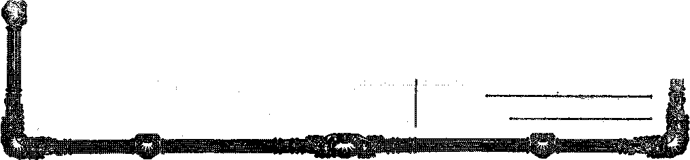

LONG-LOST SECRETS
WHO ARE
GOD’S PRIESTS?
THE BIBLE AS A STANDARD OF TRUTH
MILK—-THE GREATEST OF HUMAN FOODS
HOW GREAT BRITAIN
TRAINS HER SAILORS
Vol. VIII Bi Weekly No. 192
January 26, 1927
OLD WORLD DYING
a copy —■ $ 10U a Year
Canada and foreign Countries $ 150
a Jowiial of fact
NEW
VORLB BEGINNING
La®» and Economics
Bkke ano Thesis Aboto th® Woki® ......... . , 239
Long Hours Do Not Iscrease Production ......... W Low Wages a Cans® Of Death .............. 2(» Girls Benefited by Employer Lunches ..........
The Foreman's Tot Cossmandmeuts ........... 281
»' Social and Ehscatiohal
Little Shavers Become Little Savers ........... 281
A Brave and Busy Invalid .............. 2®
The Christmas Stout Tenn tnr a Gseman Motwlb .......... 274
Mahwxcwrbs and Mining
Aitidciai Anthracite Now to Be Had ........... 2W
The Wonders of Bituminous Coal ............ 2®
LonoLost Secbbts .................. 289
PlNANOK—COMMERfi&—TttANSmWABDN
Employe Stock Ownership .... .......... SS&
Water Power One-Poutth Developed ........... Ml Who Issues the Maney? ................ 261 Babson on Installment Buying ............. 261 Detroit America's Air Gaiter ..... ........ ®2
Tn» Bus Vxbsijs the Stwst Car ............. 265 Shwowstew m® Ships ................ STI
p0rmcAir-“DcM^T3c anb Foreign
A Business Man’s Ownion oe WA«ni\tm>N ......... 270 Dow Britain Tsains His Saswiis ............. 271 Dire Distress in Waus ................ 273
Hom® and Health
The Most Imtortast tw Hitman FIxwi. .......... 266
Hay Km® Cvxm> “A La Ggwbn Aos ’ ...... .... 272
Ekmgion and Philosophy
Who ack Goal's Twr. I’Rir^Tnoos? ..... 275
Bints Quwhons an» Aa ......... .... , 280
Gon's Wes» the Standard «>• Truth ........... r® torus Sti’mbs s><® Little Fwm.® ......... . , , , • ?As Sttoiss in “Tee Hasp of Gts»” . . ........... . 287
Published every other Wednesday at IS Concord Street. Brooklyn, N. Y., 0. g. A., bi runsibue WWHJWOHTI1, HVOGINGS A MARTIN ’
Copartners cart proprietors tWifiwi.- IS Conrorrf Stmt, ftroolfgn, y. y., IT.&A, CLAYTON J. .WOODWORTH . . . Mtlltor RODRRT 3. MASm.it. Bturtnees Manasa WM. F. HOGGINGS . . Sec'y and Treah.
Five Cents * Corr—$1.00 a Ysar Mak® RtsMtmaCSs TO THR OOLDRA’ AGA Suites it> W» do not as B rale, etaid a card ot acknowledgment for «
«Howal or f« a new anhsertptfon A renewal blank (carrying notice trf espiratian) will te sent with the jmtraal <mo month before the eutartptian espiras. Change of addrebO, when retjoested, Blay fee expected to appear on address label within one month. SObekw Orness; Drtttsh ..... 34 Cmven Temie^ Lancaster Gate, London W. & t'awuiitni . .«♦»♦... 38 40 Irwin AvOnuS, Toronto, Ontario A«*4ral(Urf«n .««•>. . ADS Collins Street, Melbourne. Australia Roaift A/Heen %«»«,. 8 Leiie Street, Cape Town, Soath Africa
JBnteied as second-eiaaa matter at N. 1'., under the Act of March A 18T#
gjg^S
........ rt'rti q t .wr^ssgssissstt—
Volume VHI Brooklyn N. Y., Wednesday, Jasmary 26, W27 NaffiW IW
.. .................. ..............^..^rr: .rrw^.waagTTATOu' . . I . . "iTlrf
'[Radiocast from Station WBBR on a wave length of 416.4 meters by the Editor.]
Untied Workers? Cooperative Association
THE United Workers’ Cooperative Association, composed exclusively of union workers in good standing, has moved into its first cooperative home. That is to the Association is now sole owner, proprietor and tenant of an entire city block, consisting of 337 apartments, in five stories. The block is a model in every respect The Association, which is only nine years old, now owns seven city blocks on which similar buildings will be erected. The Association is not nin for profit.
Kmnlsye Stock Ownership
OUT of every 100 shares of common stock in the 400,000 corporations of the country 1.5 shares are held by employes, and out of every 100 shares of preferred stock 1.9 shares are held by employes. The average holdings of employes owning common stock are $1,400 and of preferred stock $2,800. The plan encourages thrift, friendliness between employers and employes, and makes the worker personally interested in the success of the business.
Income Not Fairly Distributed
FTIHE National Catholic Welfare Council A paints out that the national income is not fairly distributed. It says;
Oar prosperity now is not national, because the drmfiis wg not prosperous and because great numbers of city workers ain not prosperous. The best sign that >j®sj»rity is not widespread at home is the sending of « much money and goods abroad. Tire fact that th® depeadenee on foreign markets is increasing shows again iaafc ew with the great productive capacity of the United States there is something wrong with the domestic market—®ft inability among large portions of ths japrihtkm to buy nr the goods produced—an inequi-table diatnbutmrs of the national mwme.
The Three Richest Ven in America
THE three richest men in America each haw incomes of more than $5,000,000 a year.
This is about $100,000 a week for each working week, $20,000 a day if they work five days a week, $2,500 an hour if they work eight hours a day, and $40 a minute for each minute of working time. But if* they miss a minute now and then, the pay goes on just the same. Probably one of these men is interested in oil, another in moat and a third in automobiles. 'We cannot be sure, but we can guess that their names ar® Rockefeller, Armour and Ford.
Ktiliny Three Slen an How
THE speeding up of labor is said to be largely responsible for the killing of three men every hour in the industries of this country. Besides this there are 700,OTO workers that are so seriously injured every year that they lose at least four weeks work. A contributing cause is the large number of new employes who are unfamiliar with the dangers incident to their tasks. There is no apprentice system in the United States, and myriads of young men and women go to work every year who have no knowledge whatever of the dangers that surround them, in the factories where they work.
Fifty Burned to Death Every Day
FFTY persons are burned to death every day in the United States. One-half of these are in the homes. Every three minutes there is & cry of Fire in somebody’s home. Th® losses ia. property run into the millions. Th© Fir® Uadm® writers are agreed that the surest protectioa against these fires is good housekeeping. Th® causes are too varied to be listed, but careless housekeeping is at toe bottom of nearly al therm
SB»
IJ80 Acddesfy Every Second
IT SEEMS surprising to be told that there, are
1,380 accidents every second in the United States, but those are the figures of the Reconstruction Hospital, which has made a nationwide survey. The same report shows that one person in every nine in the United States meets with an accident every year and that one out of every ten deaths is traceable to an accident.
Long Hours Do Not Increase Production
IT IS an old fallacy that long hours mean increased production. They often mean less. It has been proven in some sections of the world that where men, women and children work fifteen or sixteen hours per day they soon wear out, become less valuable as workers, earn less and less and can buy less and less. Leisure time means added physical and nervous energy, and therefore more and better work.
/s Prosperity Slowing Up?
npiIERE are some indications that prosperity, after having had two excellent years, is now smiling up. Students of such matters point to the building industries as one of the straws which indicate how die wind is blowing in this regard, For several months past the building business has shown a steadily declining volume.
Low Wages a Cause of Death
Y OW wages are a di rec t cause of death, in the opinion of Ur. II. Alice Fsserson of the New York Tuborculoisis <m«l Health Association. The high trheiei.m&is death rate among girls from fifteen to tiwmty-forr ware of age i? las ge-ly chargeable to the Cart that their wag“s are so si<iall that they ca<n ot grt the clothing they feel that they and at the same time have enough to n-it* so 4hey cut down on the food.
Guls Eteieftted by Employer Lunches
QUL'STTOL’NAITE sort out by the As-4*x soeiat’on to P'miote Proper Bousing for Girls shows d at Gv vroup o.iertiou»fi paj s 26 cents for lurch when obtained at a lunch room conducted by the ejnp’uy^r, 43 emits ?t & cafeteria and .~3 cents at a restaurant. The same questionnaire shows that girls living at home are subsidized by parents to the extent of about |2 a week.
Efficiency Invades the Bedroom
HD HE efficiency expert has at last invaded th® J* bedroom, and by means of carefully regulated tests has proven that as much energy w created by six hours rest in a soft and comfortable bed as in eight hours rest in one that is not so comfortable. This shows that it pays in dollars and cents to give employes sufficient wages so that they may enjoy the reasonable comforts of life. Fc«ed a man well, give him decent clothing and a good lied, and more can be gotten out of him than from a man who is barely allowed to subsist
Mm and the Machine
DUE to improved machinery the average soft coal production per man per shift in the United Stales is 80 hundred, weight, while in Britain it is 17% hundred weight. Due to improved machinery the average agriculture worker can now care for 34 acres, while previously one worker could care for only 13 acres in the United States and only 9.5 acres in Britain.
Artificial Anthracite Now to Be Had
FROM plants located at Fairmont, West Virginia, artificial anthracite, made of bituminous coal, is now being shipped to eastern points and sold at a rate about $2 less than is charged for natma) anthracite. The users are said to consider it a good quality anthracite coal. Experts at th? Pittsburgh fuel conference, com-mt ntiug on this and kindred matters connected with bitnnunoos coal, set our minds at rest by declaring ihat there is enough high grade motor fuel in American oitvmiiions coal to run all the world’s fuel motors for eight hundred years.
The VfoSers cf Coal
THE fox-pmost scientists and the largest cap-iWirts of the world are now endeavoring to bring ui’o accord the best of the rtvrtty-five processes » iw v-M for extracting from e’luminous u.u?l the tvs ures it contains. It is hoped to peiieet some of ihe processes now used for obtaining gasoline from, this source. One of the present meth'ds consists of making the coal into a paste and forcing hydrogen gas into it; another consists in converting the coal into a compound gas and liquifying the gases by means of a catalyst.
Wxr Power One-Fourth Developed
WHEN one considers the immense quantities of water -which fall upon this continent, it is interesting to learn that about one-fourth of the potential water power thereby created is actually utilized. The United States still have 50,000,000 acres of irrigable or otherwise reclaimable land, so there is still room for much further growth.
FAe Foremans Ten Commandments
THE American Machinist gives ten commandments necessary to make a successful foreman: (1) Be fair. (2) Make few promises, and keep them. (3) Do not waste anger—use it. (4) Always hear the other side. (5) Do not hold spite—forgive. (6) Never show discouragement.
(7) Notice good woi'k as well as bad. (8) Watch for special ability. (9) Take your full share of blame. (10) Prevent accidents. ,
The Holding Company Scheme
A FAVORITE scheme for covering up profits of public service corporations is the holding company. In southern Indiana a holding company received ten percent of the total cost of all extensions, additions and betterments, and two percent of the entire gross earnings from all departments of the company, as its compensation for general management and supervision. How these big financiers do hate to give the common people the benefit of better rates I
Little Shavers Hee&me Little Savers
THE savings bank balances of the school children in the United States are set at $32,000,000. This is almost $10 apiece for the little folks who have taken out savings accounts in the school banks, and is a very creditable showing indeed. There are 11,371 schools in the savings bank system, with. 3,403,746 pupils actually participating in the banking feature.
Wto fssoes the Money?
THE Dearborn Independent pointedly and truthfully says:
Th.® Constitution imposes the duty of issuing money and regulating the value thereof upon Congress as a legislative act and function. The bankers of thia land have contended for this power from th® beginning. SJndtt the Federal Bawra Bank system^ Cmgrem has delegated to the banks this legislative jpsww to IbmB the people’s money and to regulate its v&ta® ®nd hM made the Government a guarantor of th® Asd serve Bank system paper notes.
The Federal Reserve Bank is a private cern.
Joseph Caplan, Immigrant
Toseph Caplan, a little lad born in Londom fa " 1884, came to this country as an immigrant at the tender age of six, and settled in Philadelphia. He has just bought the Widener Building of that city for $11,000,000. That looks as if Philadelphia is a pretty good place after all Probably some of the native Philadelphians are still wondering how Mr, Caplan managed to lay aside so much change in the thirty-six years ha has lived there. He is now forty-two.
Seventy-Two Billion Dalian
SEVENTY-TWO billion dollars is th® astounding amount of life insurance now outstanding on the lives of Americans now living. This amount is estimated as one-half the eash value of all the possessions of the entire world one hundred years ago. It not orihows th® enormous increase in the world - , - sessions^ but also outlines the giants now i.i rhe earth.
1G0,000 Chain St&ra
IN THE 100,000 chain stores m 1 he country it is said that 12% of the n '..ion’s grocery bill is contracted, 20% of the drvg busir -ss and 7.5% of the men’s shoe business. In i'ij past year three of the 5 and 10 cent sto. s did a combined business of $ KX),000,000. Ahogether about 9% of all the goods sold in the country are sold through chain stores.
Babson on Installment Buying
Rogbb W. Babson, statistician, commenting on the evils of installment buying, says:
While most things point to sevw.il years of prosperity, a distinct recession in busi™ - and possibly a panic within the next two or three y . i s would not ba surprising. When it comes it will be the result of tha over-extension of the installment business, which is eating into the vitals of business like a cancer. Trim who wish to render ® real seme® today can do so storing up cash pending the next pmis rather tiaa bjg buying seeuriiaa at the preMat ta,
Kwriesa Airplane Business Increasing
FTER lagging far behind some of the
European countries in air traffic, Uncle Sam has at last got going in pretty good shape in the air transport field. Three-fifths of the states are now traversed regularly by government planes, while private planes last year made a total of more than a quarter million flights.
Saivr « /toy in the Mails
rpiiEBE are three trains each way between
Salt Lake City and Los Angeles. The two fastest ones make the trip in twenty-four hours; the third one takes two nights and a day. The mail goes by airplane between the two cities hi five hows. and is so regular in its time that it can w counted on to arrive almost on the minute.' mind you, this includes every man, woman and child in the country, even to the babies in the cradle. A little more than half of this goes for cosmetics. There are now 7,000 kinds of beauty preparations on the market and the number is steadily increasing.
WArf the Hair Dressen Think
I THE annual convention of the American
Master Hair Dressers’ Association, recently held in Philadelphia, Mr. Charles Nessler, president of that association, declared that long and beautiful hair is essential for feminine beauty, that no short-haired girl or woman has ever won a national beauty contest, that women have discovered that they would rather be beautiful than masculine, and that the return to long ha’r is assured.
Detroit America's Air Center
ETBOIT has already become America’s air center. Regular service is maintained between Detroit and Chicago, Detroit and Cleveland, Detroit and Buffalo, and Detroit and Grand Rapids. At this writing no passengers are carried on the Cleveland and Buffalo flights; but the Ford Company operate the cars daily and on schedule time, carrying Ford parts. The Grand Rapids line will be extended to St. Paul in the spring. The machines weigh two and a half tons and are equipped with three motors. Two planes a week will be turned out hereafter, and it can be set down as certain that America, will have a real air service by next summer.
The Weaker Sex
OW that by swmiming in record time across the English Channel, and from Albany to
New York, women have demonstrated that the men are really the weaker sex, the suggestion is being made that the rr.eu may conclude to relapse into their old barbaric habits and expect the women to do all the work of the family while they spend their time sitting around smoking and telling stories. Girls better take note that it does not pay to get the name of being too athletic.
Mtat W Pay to L®®k Pretty rpHB statistieiaM have it all figured out They “*• know now that here in America we average over $2 per month just to look pr.-tiy. And,
Movie Stars for Sale
CHICAGO advertising agency offers, for the sums of $150 to $2,500, to have any one of a considerable number of famous and near-famous movie stars pose for goods, wares and merchandise which it is proposed to popularize, ’ and the aforesaid famous and near-famous stars ( will also sign indorsements which may be of the -advertiser’s own composition. Just for once an advertising concern has presumed to tell the great unthinking American public in advance how stupid it is.
A Brave and Busy Invalid
HE Pathfinder tells of a carpenter in Campbellsport, Wis., who fell from a barn and broke his hack. Unable to move, and compelled to spend the rest of his life on the flat of his back in bed, this man has become a successful contractor and has continued for seventeen years to support a family of four, without calling on. others for assistance.
.4 Boy Hero al Atlantic Citg
T ATLANTIC CITY last summer two little girls fell off a wharf. A lad of twelve, clad in overalls, dove in after them, caught one child by the hair, and caught the dress of the other in his teeth, and managed to keep afloat until all were rescued. Then he sauntered off down th® beach, with his dog tagging along behind hmn without even stopping to leave his name. At last accr.uum the Atlantic City police were trying to find him, so that he might be suitably rewarded for his heroism. It heartens one to know that there are such people still alive.
Muskogee Checkoff for Charity
CHARITY workers in Muskogee, Oklahoma, are said to have succeeded in putting through a charity checkoff system, by which every employe of most of the concerns in town is required to contribute two or three days’ pay to charity. If he does not wish to line up with the rest he is fired. This is a new' one. AVhy not add chaiRy to the taxes and get them in a legal way, instead of by the holdup method 1
Broadwoy's New Signs
DESCRIBING Broadways new signs the
New York Times says:
The f'v'j’G’M. ber^alm of Broaaway, a great outdoor entertainment to many who marvel at the mvnad lights fia-J-ing back and forth in so many ingenious co.iibiiidtAju,, is bcvomuig a wtablo picture gallciy Kerr spectacular displays are being created that unfold, in moving panorama, effects of drifting clouds, runnrng water, surging dames, and the foam and spray of ocean waves a= background for figures symbolically representing themes of motion pictures. Other new scenes u .th. animated letters praise the quality of innumerable com-memal products.
Price of Slaves in 1850
SEVENTY-SIX years ago, in Maryland, the value of a slave girl three years old was $50, a woman of 28 years was worth $159, a boy of 15 was valued at $300, end a man of 37 years of age was counted as worth $550 to his owner. Now a good tractor can be bought for the price ©f the wan, can do infinitely more work, never needs a rest, smd needs no care when it is old. It can just be sold for scrap and a new one bought to take its place.
What G&ldsboro Feared
A T GOLDSBORO, N. C., a mob oi able-bodied men flogged Isaac Best, a Negro seventy years of age, on the ground that he was a eon-Jure doctor and was liable to poison the wells in the neighborhood. Seven persons in the mob have been arrested. Six of them were Negroes; one was white. Evidently Goldsboro is in need of more education of the right kind. .A. thing like this is enough to set Goldsboro back ten years.
Improved Homes of Southern Negroes
SOUTHERN Negroes are improving their homes, whitewashing the cabins inside and out, putting in glass windows and doorsteps, digging new wells, planting trees, making rugs, putting in sanitary toilets, and learning to keep the premises clean and attractive. The old style southern Negro cabin, which was a disgrace to humanity, is passing away.
Negroes Eager to Learn
fpiIE attendance at night schools in the largest — Negro city in the world, namely in the Harlem district, of New York, proves that ths Negroes are one of the most studious and ambitious classes of people in this metropolitan area. The enrollment at one of the Harlem nightschools Lwt year was 1,788, the largest in any of fhe gVfl PcrougLs..
Teachers Mu, t Not Thtrte
IT IS quite a shock to the teachers of Now Yo”k City to learn that while they are supposed to teach others to think, ihey are not alloved Io do so tlicnw-lves. They have eome out with a manifesto in which it is pointed out that three of their number, Miss J. W. Hughan, 'Dr. Abraham Lefkowitz and Miss Ruth Gillette Hardy, have been discriminated against, not because of any lack of professional ability, but solely because they are known to be interested in human progress and are identified with some of the more progressive political movements.
Barit Take the Colleges To© Seriously fJiHE Chicago Evening American- said recently;
There are few lines cf real effort in the modern life of the United States in which five years in college really prepare a joung man. for more important and successful wvxk later. Benjamin Franklin. Abraham Lincoln, Thomas A. Edwa, Henry Ford and many others sufficiently successfol never went to college. Do you think any college could have made them more sueassful? Do yen think any one of them could have afforded to take out of bis independent thinking and struggling young manhood five years for college life?
Berea College & Busy Place
BEREA College, in the southeastern part of Kentucky, is a busy place. Most of the 2,700 students there work their way through. The college provides tuition free; but in order t® keep going if maintains a broom industry, a refrigerator works, a dairy business, a large bakery, a great market garden and several other fireside industries. The students average to pay sixty-seven percent of their school expenses by the work which they render. Some labor half a day and study the other half. The students pay eleven cents apiece for their meals which are said to be good.
Free Education in Silk Making
HP HE New York Board of Education provides J- a free education in silk making and in the silk business generally, for high school graduates. Every boy completing the course is placed with a representative silk firm. The boys are given afternoon employment in the interim.
Imem’tance of Correspondence Schools
SO IMPORTANT are correspondence schools in the educational life of the people of the United States that the foes which are annually paid into them are one and one-half times the tuition fees of all the so-called regular colleges and universities in the country. There are about two million active students in these institutions at all times, and there is hardly a subject that can be named that is not taught by the correspondence method. Carefully prepared texts, numerous illustrations and close examination of ansv’Ors to quo?‘ions are characteristic of the best of the^e institutions.
What uie Scare Headlines Accomplish
HAT the scare headlines accomplish is well 'jluffi rated by the riots vhich took biNev, York, uffiie ffity thovsand >vomen and girls for"’,: for a chance to & e the corpse of Kn Wffi Va>°T’ii’>o ffi ijovte ■n',‘‘(muted police diffiev « the eoruls v ffimn'y. One hundred U’pv’cri Turn1}-' "M wor'en’s shoes v’ere lomsd on +L-i pavement after em- retreat of the mob. T.uC‘ e riots can no L>id in the door of the score headlines hi ‘he papers.
Tks Gmtu-A of Los ^ttg^cs
PROM 27 399 a-r.? ri NT? tbv wffi 'ri Los
Angeles grow to 250/15 J ncies in or an increase of 815 neieeut. If this of increase eondnued Los Angeles would be larger than the state of California withm ten yearn The expansion of the seven American cities ol < Los Angeles, Richmond, Detroit, Atlanta, Baltimore, Kansas City and Seattle was so great ■ from 1903 to 1923 that if continued at the same ' rate for forty years, they7 would cover 8,077,285 / square miles, which are 5,050,566 square miles more than there are in the whole United States.
Want Bull Fights Abolished
EVERAL thousand Mexican school children have sent a petition to the Minister of Education requesting that he use his influence with other officials to put an end to bull fights in Mexico. Here is a suggestion to the youth of our own land. They could send petitions to the President to see if something could be done to put an end to prize fights in the United States.
Mexico Seeks Colonists
IN AN advertisement which waxes eloquent, the Mexican government invites colonists, in the following terms:
With temperate tropical and sub-tropical lands, potentially and actually capable of producing every conceivable product; w.th more than five thou-and in’les of coast lines on the Atlantic and Pacific; with neaily twenty thousand miles of rails crossing the conntiy from one end to the other; with, a soil that yields three crops a jear without the aid of machinery or {utilizer; with a government of the people, by the people, for the people and with +be most a Ji arced legifiatiou Tn protect life awl freedom, and insure social justice, ffiu.es i«t j'i-tlv entitled to be called Homeseehers’ Paradise, Mexico is the place.
Creations in Braz’
TN BENZIL every employer must give each T ewjJoye once a year fifteen days vacation w.lh pay, oi submit +o a fine winch may be as »m.h YV). H.e vucution Ie given at any time of the year that best sims the employ eft com eniem e, but the emplove uu his own part m also required by law to use the fifteen days for recreation and reel, and not for other work.
FrospeABj ih Smith America
Qterffill AMERICA is beginning to come into M its own. Owing to the development of th® oil induury in Venezuela the export business of the United States with that country quadrupled in the Iasi four years, rising from $7,600,000 to $31,400,000. In the same time shipments of automobiles to Argentina multiplied sevenfold, to Colombia elevenfold, to Brazil thirteenfold and to Chile fourteenfold.
Civilization's Debt to the Oil Refiners
FROM one point of view it is the oil refiners who have made America what it is today. Gasoline today is selling in the United States around 20 cents a gallon, with the result that most people can afford to buy all they want, and with the result also that business has been speeded up to a tremendous pace. In Mexico City gasoline is 38 cents a gallon, because there are no refineries. In Athens gasoline is 62 cents a gallon; in Colombia it is 73 cents: in South Africa 98 cents. These high prices hold back development in all those places.
Bmy Days at Little River
FpWO reporters for the Toronto Daily Star J- visited a point on the American side of the Detroit river, some eight miles above Detroit, where automobiles were being loaded in broad daylight with eases of beer and whiskey brought over from Canada. A week later they visited the town of Little River, Ontario, where on one day they saw fifty boats of all kinds taking on case^ of beer and whiskey without anybody interfering with their operations or requiring papers of any kind. The warehouses where these boats got this beer and -whiskey were being supplied constantly by automobiles, driving up and unloading their contents, openly.
The World's Fastest Cable
THE world’s greatest cable, with a capaoUx of eight times that of any other cable, has just been laid between England and New York* without attracting any attention worth speaking of. The reason for this is that wireless has caught the imagination of the public and ths cable has become commonplace. Nevertheless, cables will probably always carry the bulk of ths world’s business.
London Building f&r the Future
LONDON is building not merely for the present but for the future. The city recently opened the longest tube in the world, running north and south for a distance of 16% miles. At the soifihem terminus is a great garage* where a minimum charge for parking makes if possible for automobilists to leave their machines in safety while they go in to transact their daily business. A double end is accomplished ; keeping the automobiles out of the already congested streets, and providing additional traffic for the new subway.
Daily Mail Editor Loses His Job
HOHE editor of the London Dally Mail, who was largely responsible for the recent outbreak of attacks on Uncle Sam by the press of his city, has been forced to resign his position. Lord Rothermere, the man who owned the Daily Mail, came out in another publication whmli ha controls and said that the editor’s attack on America represented only the editor’s view and not his own.
IT SEEMS established now that the dus will not drive out. ths srreet cay as seemed likely to be the case a few years ago. (n no city of 50,000 or more population has The bres been able to successfully render the service supplied by the street cars. Serious attempts have been made to do this in Akron, Iksi Homes, Bridgeport and Saginaw; but in every instance It has 'Xeen necessary to restore the street ears. In several instances the bus companies have gone bankrupt.
Some of the reasons that hold the street car in service are their superior carrying power, as it takes five busses to do the work of three street cars, less space in the street, bccar«e a bus even going in a generally straight direction must be given a wider berth clearance than a street car on its fixed directional tracks; and finally, the street car has an ability to handle tush hour traffic and to make its way through slippery pavements and snowstorms much better than the bu« has proven its ability to do.
Official records show that in the past ten years the number cf cries of street railway track construction slightly exceeds the number of miles abandoned; and that, in the matter ©£ closed ears, there are actually 2,658 more in use now than there were in 1919.
TT MAY quite possibly be true that in its per-feet state the human family will subsist on a tithe of the food they now consume, and that their diet will be chiefly or altogether that of fruits and vegetables; but at present the most important article of human food is milk, and increasingly so.
Although milk is 87.4 percent water, yet the energy value of a quart of milk is fixed as equal to eight eggs, two pounds of chicken, three-fifths of a pound of ham, three pints of oysters, three pounds of fresh codfish, three-quarters of a pound of steak, or a third of a pound of full cream cheese. And it is by far the cheapest of all animal foods.
For every ore hundred pounds of food consumed, the daily cow returns m ruJk the equiv"knt in food values of 18 pounds of solid .food, as against 5.1 pounds for poultry in the form of pegs; or 4.2 pounds in tiie form of dressed poultry; or 15.6 pounds for swine in the form of pork; or 2.8 pounds for cattle in the form of dressed beef; or 2.6 pounds for sheep in the form of xnulton.
Even family of five has its own cow, whether it knows this or not. That is to say, it requires one cow to keep each five persons supplied with milk, butter, elmose, condensed mill?, powdered milk, ice ex earn and veal. A well nourished cow uses 43% of her feed to maintain her body, 30% for the work of digestion, and 27 % actually goes to make niflk. The average eomposuion of normal radk is 87.4% water, 3.7% fat, 3.2% casein and albumin, 5% milk sugar and 7% ash.
The total annual production of milk in the United States is estimated at 87,905,000,000 pounds, or erurgh to heavily load 1,000,000 freight c«r& and make a freight ti rnn ten thousand mile* long; and 44%% of this is consumed as milk, 3C% goes into butter, 4%% into cheese, 4%% irto eordtmwd milk. 4% into ice cream, 4% U used for feeding purpose"; and it is estimated ■'hat 2%/t is we^ieu. Orhcr estimates vary Hmw figm.es riigb'ly. It m admitted that no child CevAoj s properly x ithovt a liberal supply of rcx-k in his diet. It is essential to growth.
Iwiw’Dfo <?cr mess of Mi’k TMevss
IP IS j?z in enough for snobody to steal a bet de o’ milk from a doorstep, and that sometimes happens; but that is as nothing compared to the colossal frauds against farmers and their customers that have been perpetrated in New York and many other large cities by organized thievery working on a huge scale, and, in New York, through the city’s Health Department.
During the summer of 1925 it was discovered that about 40% of all the milk sold in the city was being deliberately adulterated by the addition of water and skimmed milk, and that the adulteration was <*arri"d c-i with the connivance of officials in the Healdi Department of the city. The persons affected were chiefly the hospitals and the poor, who buy their milk in bulk or “loose’’, i. e.. not in Lotties. One would suppose that even Sarnn hii .self would be ashamed to piofit by thus robtong the sick and the babies of the -poor.
Figures made at the time indicated that the consumers among the poor and in the hospitals were paying out $90,000 a day for cocoa nut oil and water, mixed skilfully with their butter; to say nothing of the ao alteration in the nulK. Tae dealers paid regularly for “protection” of their industry.
Im 1921 an honest milk producing concern that refused to have any dealings wi1h these crooks was “framed up” by them. Into a can of honest milk the plotters deliberately put a quantity of eoeoanut oil and then crooked officials arretted the honest producers and fined them $400 so that they could the more safely go along with their own bedevilment unchecked. Could they not point with pride to the results they wer® getting in fining lawbreakers? The concern in question was so sure of its honesty that it never even employed a lav-yor until proven guilty of an off°nse of vliieh it was, so it claims, totally innocent.
In Vienna one of the biggest dairymen withdrew the cream from his milk, and sold it as such. Then he melted beef suet and ran it through a “humogeneizer” into the skimmed milk in such a way as to make it appear creamy, and the fraud escaped detection of his customers for a long tiric. Another resourceful Vienna milkman explained to an excited customer that the reason why she found a tadpole in her milk was because the cows frequently swallow tadpoles while drinking*
The facility with which some dairymen us® the pxmphandl© so impressed a farmer at Waynesboro, Pa., that he adopted the rmusual expedient of demonstrating his honesty by marching his cow from door to door and doing the milking at the curb in front of the home of the customer.
gw
A Few Items in History
ONE of the first dairy farms in the United States was that of Joachim Pietersen Kuyter, who grazed his cattle in a district now covered by apartment houses in the Harlem district of New York City. He brought to this country the first Holstein-Friesian cattle seen here. This was while the city was still in possession of the Dutch, long before the Duke of York seized it arid named it New York.
In 1845 the canton of Glarus, Switzerland, became so overpopulated that at a cantonal meeting it was decided to purchase lands in the United States upon which some of the population might find homes. The result was the founding of New Gjhrn«, Wisconsin, and the making of Wisconsin into the leading dairy state of the union.
The leading dairy countries of the world are Holland, Denmark, Switzerland, Canada and New Zealand. Argentina is coming to the front. Britain is holding her own. Russia and Sweden ?ro large producers. France, Italy, Syria and the Balkans are active in the cheese industries. Most of these countries are far in advance of the United States in daily methods, their cows averaging to give nearly twice as much milk as those of America. Cfiinia. Japan and Siam are taking their first lessons in modern dairying.
Dairying is increasing in the United States. New districts are being opened to it constantly. Once people thought it was not adapted to the South, but it is now knowm that that is not true. Dairying is a form of agricuHurp which leaves the soil better every year instead of wearing it out.
Her Majesty the Cow
THE cow population of the earth is set at, United States 23,467,000, Gennany 7,683,000, France 6,650.000, Canada 3,547,000, England 2,203,000, Sweden 1,635,000, Ireland 1,480,000, Holland 1,340,000, Denmark 1,050,000, Japan 1,000,000, Switzerland 730,000.
Queen of them all, as far as we know, is Tilly 'Aleartra, Holstein-Friesian, which produced in six consecutive years 156,776 pounds of milt containing butter-fat equal to 6,141 pounds of butter. The Holstein breed have registered 204 cows that have each produced over 1,000 pounds of butter per year.
This article lays no claim to expert information on the dairy business, but information at hand shows that there are four universally recognized special-purpose dairy breeds of cattle: Holstein-Friesian, Ayrshire, Jersey and Guernsey, with a dozen or fifteen other breeds well known. A prize bull has been known to sell as high as $75,000.
Tn Holland, the headquarters for Holstein cattle, fanners dress their cattle in sacking in the early spring to keep them from catching cold. The red and white Ayrshire cattle come from Scotland. Jersey and Guernsey eat de come from the Channel Islands. Durhams and Devons are two well-known English breeds.
Pmteurizttiim md Sterilization
THE process of pasteurization consists in heating milk to a given temperature for a certain time and then cooling it to a temperature sufficient for the purpose. The object is to kill disease organisms and to check germ growth. The cooling is as essential as the heating.
Sterilization goes farther than pasteurization, in that it aims to kill all germ life in and about the material—an act of doubtful value, because it is known that some germs are of positive benefit to humans. Department of Agriculture Farmers’ Bulletin No. 748 describes a form of sterilizer which can be provided at a cost of $10 to $15.
Most dairymen make the mistake of permitting their cans to stand in the sun all day with the covers on, giving neither the sun nor tne air a chance to perform their natural cleansing and purifying work. The milk is often placed in transit before it has been properly cooled. These things make dissatisfied customers.
New food for cows are sunflowers, which, in Saskatchewan, produce twice as much fodder per acre as any other fodder crop, and in connection with silos have solved the problem of winter feeding in that country. In New York and Pennsylvania buckwheat middlings and buckwheat feed have been found to be rich in proteins, and economical
The Babeoek Milk Test
R. Stephek M. Babcock, of the University of AViseonsm, gave free to the world, in 1890, a device which reveals the amount of butter fat in milk. It provides a simple method by which the valuable cows in a herd may be unfailingly discovered, and the “boarders” can be shown up for what they are.
The Babcock tester is in use today in every part of the world, and has done more for the development of the dairy industry than all other inventions combined. If Dr. Babcock had been wiliing to make money instead of being a benefactor to his fellow men he could easily have been many times a millionaire.
Although foreign countries have taken the Babcock tester seriously and have doubled their milk and butter output per cow, yet in the United States, out of 23,467,000 cows there are only about 307,000 being regularly tested; because the average American farmer prefers to work with his hands instead of with his head.
It is said that one minute per day spent in weighing out the feed consumed and milk produced per cow would be all the time required to determine what is of vital importance to the farmer to know, namely, which of his cows are working for him and which are working against him.
Dairymen Fuse Bard Conditions
klRYMEN face hard conditions. The work is hard and there is never any let-up to it.
The m'lk trust, in the vicinity of New York, holds the producer down to the lowest possible price, and then takes his milk, recaps it awl relabels it, and charges sky-high for it.
Moreover, the milk trust holds the producer to a limited output, and will never let him go ahead and increase his herd so that he ran make any money out of his plant. 'Their constant aim is a limited production, and the highest of prices to consumers—the babies and the sick.
As a sample of the fortunes made by the trust’s peculiar methods of doing business, it may be noted that the concern was incorporated in New York in 1870 for $40,000, and that in fifty years its capitalization had become $35,-000,000. Who shall say that the farmers ought not to have had a share of this!
Another evil with which the farmers havo to contend is to have their cattle sshed wAtar flu BM® called tuberculosis test. It is claimed that many cows are ruined by the test. Furthermore, there is no proof that human beings ever get tuberculosis from drinking milk from infected cows. Anyway, the same human beings get the flesh of the infected animals at the butcher shop later; and the flesh is worse than the milk.
Another foe of the dairy farmer is the oleomargarine maker. The profits in oleomargarine are very high and the amounts paid to stockholders and set aside for surplus by two of these companies represent a serious handicap to the legitimate butter maker.
But there are crooked fanners, too. The editor of the Rural New Yorker declares that he visited an auction sale of fine Jersey cattle, held by a well-known breeder, and that at dinner he and the other guests were provided with oleomargarine wherewith to spread their bread. He «aw the coloring matter being mixed into the white oleomargarine.
Powdered milk is now on the market. It is obtained by spraying the milk in hot air, thus drying it. Milk in this form will keep for months. Condensed milk is preserved by adding sugar to the milk before evaporation. The term Evaporated Milk is applied to the product when made by evaporating part of the ■water and preserving the residue by heating, when it is in the final container.
Butter and Butter-Making
MOST people in the world have never seen any cow butter. The first butter was made long ago from the milk of the goat, reindeer, camel and yak. The Armenian dairymaid still hangs her goatskin churn by cords from a tripod and swings it to and fro as she did thousands of years ago.
But the West is on the move. It has found that the cow is the champion butter producer, and in the recent past has found that the cream separator leaves the old method of obtaining butter fat immeasurably in the rear. A good cream separator will lose less than two ounces of butter in 100 lbs.
A still more recent improvement comes from Holland, where the cream is now churned into butter in an atmosphere of pur® carbon dioxide. This fills the pores of th® butter and prevents th® rapid deterioration of the butter whieh is m of th® plagues of the dairy business.
The best butter has a waxy body, a bright appearance, and when a slab is broken shows a grain like broken steel. Overworked butter is sticky, salvy, dull and greasy in appearance, and has a gummy grain. Its keeping qualities are inferior to those of properly worked butter. Mottled butter is caused by an uneven distribution of salt.
Tn France, butter is protected from deterioration by glazing the surface with a coat of melted sugar, laid on with a soft brush. The process has also been introduced on a large scale in England.
The American custom of imprinting an ornamental emblem or design on each roll or print of butter is passing away, properly so, and will soon become obsolete. That was all right when people had such a thing as leisure; but now that we are surrounded on all sides with labor-saving machinery, nobody has any time for such useless niceties.
Butter made in Sweden is served in the resort hotels of Arizona, rix thousand miles away. An absolute guarantee goes with this imported butter. Scandinavia is credited with introducing butter into the rest of Europe. At one time a man’s wealth, in Scandinavia was measured by the amount of bulrir he owned.
Cheese and Cheese-Making
rjpriEHE are mid to bo eighioeu main families of cheeses, with 400 species, t'rarce claims the hmor o? rru'ung P c fiivst cheeses in the world, ’•hough Sv zward mid otwr c< >unc nes would contest ’he honor. But France has
Roquefort, Camembert, Bruy ere and NeufchateL
There are cheeses ripened in freshly cut hay? and. cheeses packed with hops, saffron, clover, potatoes, sage, pimiento peppers, rose leaves and marigold pleats. There are cheeses of delectable flavor but with a breath like a prohibition officer, that can be handled only after dark, and when the neighbors on both sides are out of town. Limburger! 0 boy, how bad, and yet how good I
The Fiench village of Vinioutier has Just paid homage to the memory of Louise Harel, the farmer’s wife who invented the Camembert cheese. There were a brass band, a procession, a decoration of her tomb, and the affixing of a bronze tablet to the house where she made the discovery. Well! Why not? Why raise monuments to the Napoleons and other murderers and ignore those who have helped to make the world a more enjoyable place to live?
American cheese makers are now’ imitating most of the European cheeses. They even attempt to make out of cow's milk Roquefort cheeses, which have never been made successfully except from show's mdk and th-i. only in the dank natural caverns in the south of France.
The IT. S. Department of Agi icuhurc wi’l now tell any who inquire, how to make Neufchatei cheese, named after the town of that name in Nortln.cstem ri rance; or P memo cream chfoe. vi Swi»s chee®?, famous dor ns h its. Some of dw wealthy Sw. •> frmnes c c"ws riore than a wntuw Wd. Some Ar’o^s luriA cheeses aw buried m.t’l thev gr we.
rpHE n-'W Jr’ w -on oi “1' \ib’e o-lns” by A tiyo ’•c' -id 1st’ if- on ochb-vroi u
or r-wlwulw inttreri, not only on accoum of its p-wwed ies but Veuwe A represents the rediscover of a secret b'Tongmg to the g’ cients, whmh has baffled res c«rch and experiment for thousands of y-mrs. Countless attempts have bc*nj made to reproduce the unbreakable glad's used by the Romans, during the reign of Emperor Tiberius (42 B. C.-37 A. D.) for the ■mamil’acture of drinking caps which, although possessing all the opaque properties of
o’oner" «; w*d, w. w w f r v-- r' *»1
ut. w q ” ril the present tim®.
’I’Leic Wc mu " wrf long lost w; ri of the arm and craft- practiced by the one en+ parries which sod doiy <’v probing lbw" scl.-uce; aid although the extensive excuv'rioos being made m rhe differed parts of th» cord continue to reveal new wonders of bygone civilizations, yet the methods vhirfi made these wonders possible cannot bo rediscovered.
Richly-dyed fabrics in every ccmoeivable hue
have been brought forth from the temple and tomb, fresh and unfaded after the lapse of long centuries, their colors brighter and more enduring than any dyes produced in modern times. Beautiful painting and decorating work have been unearthed, with their vivid colorings still undimmed by the touch of time; and much exquisite gilding and ornamentation has lost nothing of its pi*?stine brilliancy during thousands of years. But the secrets of the dyes and pigments used in these artistic achievements have not come down to us through the ages, and the most diligent research to discover bow the ancient i, rt-bts mixed their colots has failed to sol...... t;.“ myt-'y.
jj'-e met of tempering euppr;—a lest rat of the ancient Egyptians and the Aztecs of Mexico —which metallurgists of all ages have vainly sought, was thought to have been discovered about two years ago by a young American. He experimented with considerable success, and the results so impressed the directors of the United States Steel Corporation that they offered $1,000,000, plus one cent royalty per 15 of all copper tempered, for the process. It was later reported, however, that the new process did not justify the hiah hopes entertained for it.
Another long-lost sc -rer which has been en-geg.nr the atTeinion of scientists is the process of wekitg steel without destroying its temper. All these arts, ami more, will be repealed shortly in the New Age now dawning.
A fchirime&s utarPs Opinion ch T) wiiqicn By Hon. tfiitm L. Davey
(Ry railed from bengrro-, oral Rccoid, Reb \3, 1926)
IN SPITE of the President’s earnest and repeated 'o'oas for economy, there was an actual iaei<m-e- of more than 2'l.OCO civilian employees of the Government since a few months after he as.-uumd office. According to the report of the Civil Service Commission there were 544, 671 civilian employees on the pay roll December 31, 1923. On June 30, 1925, there were 564018 civilian employees I am not blaming the Piesidoit. but merely pointing out the fact that there has been an increase, ram er than a deci ease.
Outside ol fewer carriers and cUrks and those direct!} cancer; “J with the of p>c mails,
the civild:-’ cmplowws of the United State'* Gov.uTjiept rtv’de the lai perl number of lorf'r«, tii= c kilkw, rd hmf ;rsso”s *hat 7 have ever seen brought lea; ucr rnoer one banner.
Please note die woi!d hndudefi*
Also, J want to eev that <1 ere are many tnou-sands of good, cfileis nt, nr.8 h-yt i Govormrimd em; loyees, and many of them ace underpaid. ’Among those who are obviously underpaid I would include many of the scientists, cconoui-ists. and other technical men, and the examiners in the Patent Office, as well as many other individuals and perhaps some groups. A large amber in these classes in the employ of the Covesoident ate holding their pos'ticns at a reel personal sacrifice and in a spirit, ot lojalty and prt nolle service. Mtwv ol them could secure niurii larger salaries from private concerns.
There is rank favoritism in this Government, both inside of the departments and as a result of prinieol pressure. Many unworthy ones get on the pay roll and stay there who render little or no service in return for their salaries. Many of the division end section chiefs are inefficient and selfish and partiri. Many of the minor assistant cbiers are wholly worthless. Bureaucracy has fastened itself on this Government in a most abhorrent sense. There are thousands upon thews, nds of unnecessary employees who are made to loaf by the spirit of the service or in order to keep some potty chief in his job.
The lot c-i a brsre class of Government workers is almost tragi6- Their case is hopeless. There are many that would be good workers under right conditions; but they have no incentive. no hope. They are the victiD‘'<’ of a, virions system. 1 would be the friend, the practical and hriplul friend, of ail the good and necessary and efficient employees of this Government. I would eliminate all the vast army of loafers and lime killers and buck passers, create fair and sensible conditions for those who remain, and pay them what they are justly entitled to for th® services they render.
How Britain Trains Her Sailors By Ca.pt. J. C. Johnson (England)
HpHE apprentice seaman of one hundred years ago was a child of about eight or nine years of age, uneducated and usually from a humble or poor home. He was sent to sea because some poor mother, a widow, had a hard struggle to find a crust of bread, for several small, hungry mouths. The sea offered a home and food; but no wages, unless a few odd coppers were given by the captain to get clothes.
This small boy’s duties were numerous, the principal one being (in small vessels) to cook the food, or (in larger ocean-going vessels) to help the cook, clean the floors, and answer any call day or night from any member of the crew from captain to ordinary seaman.
The period of apprenticeship was from four to seven years. After that period had been served the boy was then considered a full-fledged seaman and could command an able-bodied seaman’s wages, then about £2 a month or less.
If the boy had ability and resourcefulness he might be selected to take charge of a watch, and thus develop into a ship's officer; and thence some day might see him in command. Board of Trade examinations were not then demanded, as now.
With the advent of larger ships and Board of Trade examinations the system of apprenticeship, although little improved, demanded boys of at least fifteen or sixteen, more strength being required to handle the sails.
More than one or two boys were required, and as they cost the shipowner only food it was a cheap source of labor; hence in many of the large sailing vessels fifteen to twenty apprentices were carried.
This brought into being a class of hoys whose ambition w..s to serve their apprenticeship period and toen pass the Board of Tome f mii-ination and ’hits qualify through various guides, usually for t-econd mate, then first mate, and finally niaC er.
Educated boys, from homes where parents were in comfortable eirciuusk^iees, were now entered to supply the new need for the manning of the ships, all ambitious to become officers; and the ship owners now found it expedient to no longer carry on under the old "slave” system. Hence they began offering special inducements for well-to-do boys to serve apprenticeship in their vessels. Special quarters were set apart for
these boys, to keep them away from the evil influences of the common sailor (Acts 10:28); and thus the boys were developed as “gentlemen sailors”. And for such privileges their parents were asked to pay a premium, varying in amount from £10 to £150, according to th© standing of the company. .
This premium was a clever scheme to ensure the full service of the boys as- well as the fulfilling of the indentures. It was forfeited if not fulfilled. It vas a blind, io get seivloe fox nothing. Tako as an example one case known to the writer. Thirty guim-as v as the premium paid to the company; then in four veais of hard work the sum of onlv tv> enty-eigM pounds was given, the Loy as warn s. Thus this educated boy, fi om a comfortable, v.eU-°anipped home, had the privilege of four ycais hard la^or and very scanty, poor quality food, and was also out of pocket three pounds and ten slrllings.
Now in return he had an endorsed indenture, qualifying him to act as able-bodied seaman, at wages of £2-5 or £2-10-0 a month, and that only during the period of employment, because upon arrival home the crews are paid off and often spend months looking about for another vessel.
The apprenticeship period now is four years, special privileges being given to count three years sen service to boys who have spent. £200 or £300 for a nautical education in one of the several school ships, such as the-“Worcester” or “Conway”.
The “Conway” lies in the river Mersey, and for a boy to enter here if coW- a ’’GC.th smn; and this goodly sum is im-roa-od aftor the boy haves tlm “Conv-my to qualify as an abl -bodied ssamat. T!,e T'orvav’’ toy before «■-> has iw'hcd B p fie'gl’t of h’s inTikto'ton, ho - cost Is to ts rnrfiiir;, Com tl zee to five
1 ■. 1 >v'h iso'mdo.
'•’cei-' ■- al.-o awftor ship in the Mersey, the “iudetotigabie”. This ship is not foi toymBe-mor.'a” sons—it is a school ship for poor hoys.
The nocr Loy pays nothing for his schooling. After completing hh course on the ship to usually goes to sea as boy, getting a small wage; then his wages increase and he becomes an ordinary seaman. As he grows more into a young man, and becomes able to do the usual duties of an able seaman, he then signs on a# such, and thereafter gets an able-bodied sea* man’s scale of wages, which is meagre enough. But the poor boy only neeus to qualify at sea about three years and three mcisths actual sea service, and he then is a qualified A. B. on the ®ame footing as the boy who has cost his paxv ©nts so mucn for “privileges'5.
«n
We are glad the poor boys have such an advantage. But is there not something wrong with a system that costs so much in one ease and so little in the other, with the same object in view, i. e., to qualify as an able-bodied seaman 1 Of course -we are not disregarding the greater pos-sibilities due to education. But both boys ar® now on an equal footing; both can sit for Board of Trade examination and, if successful, both are equal in every respect and may get into positions equal to each other. Often it happens that the poor boy gets the better vessel.
Hay Fever Cured MA La Golden Age” By L Sneeze
EVER since The Golden Age began to be published I have been a tons taut and interested reader. I have marveled at the wonderful 'discoveries and progress made in the treatment of disease, as recorded in some of the articles contained therein. Surely after reading these articles one must conclude that the Golden Age is here and that man is actually returning to the days of his youth.
One article appeared before my astonished gaze, “A Cure for Catarrh and Hay Fever.” Here was the dream of ages fulfilled—a mire for hay fever. Countless thousands have searched for relief from this dread disease only to be disappointed in their search. Millions have been made through advertising cures for this affliction, only to have its victims spend their money in vain. - As “liope springs eternal in the human bieast”, so th® poor victims after getting stung on one thing aie just as eager to try the next thing that comes along.
I too have been a victim for fifteen years or more and luxe tried everything I have ever heard of, and they have been Iwrion. I have been connected with the medicine men of the country and am learned in their art of witchcraft, but had concluded after years of experience that the less one has to do with their charms and powders the better off one is. Yes, I have tried Iheir pills, their ointments and lotions, their serums and their cigarettes, but only t© find that the more I used the worse I got. Then I turned to the Golden Age innovations, such as chiropractic and electronic treatments, only to meet with the same result.
But now I find in Th® Gowen Age a CURE, and it must be so because a contributor to The Golden Age says so. Surely it must cost a lot of money; but no, on investigating I find thal all it costs is an invesnnent of one thin dime.
Shall I try it? “Hope springs eternal,” so here goes. I buy an ounce of powdered bayberry bark, which The Gowen Age tells me to get and sniff up my nose several times a day to get rid of my hay fever.
How many hundred pounds of the stuff have I used to help manufacture a concoction for others to use, and all I thought that it was good for was to get their money! Yet I take tins precious recipe home to try, meditating on the joy I would get out of life when the hay fever season comes on. Surely this is no idle dream, because I saw it in The Golden Age!
As soon as I arrive I quickly take a generous pinch of the bayberry for my first plunge into th® unknown, and eagerly I place it up my nostrils and give a vigorous sniff. Ouch! Helpll Murder!'! What has happened? Did a mule kick me on the beezer or was I merely electro-cured? Anyway, all the constellations of 1119 heavens quickly pass before my raptured gaze. My hair seems to have jumped off my scalp. I catch my breath; and then I discover that X have simply had a whole season of hay fever crowded into a few brief minutes. Torrents of ' water pour from my nose and eyes. I am blinded. Shall I over recover? After a while I begin to realize that I as still alive. Then I begin to return to normalcy once mor®.
What a beautiful, treatment! Only to b® re* peated several times a day for at least two months. Shall I do it? Well, no mul© ever kicked me and got away with it, so I do not think a little powdered bayberry bark ©an put me out of th® running. So here goes.
By the end of the first month I find that I can
M,
STS
take the dose without having eyes and nose run wild. By the end of the second month the mucous membrane of my nose gets case-hardened to such an extent that the bayberry does not bother me. But the hay fever season is still a month away, so I continue to keep up the treatment.
At last the fateful hour arrives. August 15th Is here. To sneeze or not to sneeze—which ©hall it be?
Ah’, in my mind’s eye I can see his Satanic Majesty getting ready to shake the ragweed and blow its pollen into the air to torture mankind once more. What a suspense! August 15,16,17,18,19. 20, and still no sneeze. Hurrah! it is gone I Something is strangely missing in my young life. The old stand-by that has been with me so many years to break up the monotony of late summer and early autumn life is no more. No longer can I pull a towel, sheet or tablecloth out of my pocket and mop up that never-ending stream, flowing from my nasal well-springs, and get a wicked laugh from those who see me. No longer will I have that awful look of misery upon my face, with the tears running out of my eyes and my friends glee-fully asking me what I am crying for.
Oh, how we hay fever victims like to see others laugh at our tearful sighing and crying I But 1 am serious—-just think how much joy is going to be token from others, just because I invested ten cents for some hayberry bark. But then—-oh, well, such is life; its just one thing after another, with r!ie first hundred years the hardest And after taut you begin to get used to it.
August 21st, Ah-ca-choo! IVLat was that? ITalse alarm, for that was the only one that showed up. I almost thought it was my friend back again. But no such luck, no sir; I had used bayberry bark.
August 28th. What a beautiful day! It is nice and waim, the air is dry, and the zephyrs from the west are playfully passing over the beautiful patches of ragweed. Ah-ca-choo, ea-choo, and a dozen more of them. How come? By noon I have as beautiful an attack of hay fever as I have ever had in my life. Ah, shucks! Stung again! Barnum was right. But there is one consolation, it cost me only ten cents this
Well, now, I can look forward to basking in flie pleasures of Dante’s “Inferno” for a month or more. Say, I’ll bet that when that bird wrote that piece he was either under the influence of demons or had hay fever—with a safe bet that he was merely trying to describe his feelings from the latter.
No. the Golden Age of prophecy is not established yet. Neither has man, returned to the days of his youth. But, thank God, we can still see by the eye of faith that the time is not far distant when mankind will be relieved from its Buffering, and will not need to rely upon such inadequate remedies and pass through such experiences as I have undergone to find relief. Surely the “Sun of righteousness" is now rising with healing in his beams, and goon the world will feel the results of the Lord’s kingdom -ow being set up in the earth. “Thy kingdom come. Thy will be done on earth, even as it is in heaven.”
[We are sure all our readers have enjoyed the above witticisms; yet there seems to be tome virtue in bai berry bark for the purpose named. Other readers report excellent results from steeping baybeiry and inhaling the fumes.—Ed. J
Errata
TN THE Merthyr Tydvil district of 'Wales the A miners, out on strike for months, finally distributed for living expenses a fund of £668 which they had collected over a period of years t© ba used for educational purposes. The distribution brought only 6s. and 6d. to th® miners, Showing the severe straits in which they find themselves, being forced to thus part with an ideal which they haw had in mind for years. TN THE Gomw As®, No. 188, article entitled, A “Psycho-Analysis”, page 133, column 2, paragraph 3, Sth line, “endangered by” should read “engendered in”; page 134, column 1, paragraph 1, 4th line, “pasts" should read “parts”; paragraph. 3, next to the last line, “luring" should read "leering”; page 136, column 2, paragraph 3, 3rd line, “jointed” should read “joined”.
TN RECORDING the speed of a ship at sea a speedometer quite unlike anything known to a landsman is used. The instrument is not termed a, speedometer, but is called a “log”, a name which is familiar to readers of stories relating to the sea. One instrument of this description which is in general use has been given the curious name of “Cherub Mark J1”. It consists of two principal parts, a rotating portion which is trailed behind the ship, and the “clock” which is situated at the vessel's stern.
Affixed to the rotating portion, which is a bra^s cytoder about eighteen inches in length, is a maLi of blades or wanes which causes fin-’ cy’Lder o revoke when dtav.n through the v.k”. Il drawn far estem, i y a towing line, the iwgtl of vludi varies according to the speed of tlm ship. A v^el steaniiug at ton knots employs a tov line of only some roity fathoms in length; bat with an ocean greyhound, with a speed of over twenty knots, tbs rotator may be towed from 100 to 220 toXhoms atoi i, in order to "scape the- ''swirl” caused by the ship’s move-mcrl
In the course of construction the log is accu-
Ships (Contributed)
rately adjusted to revolve a certain number of times in traversing one nautical mile, and the revolutions are mechanically transmitted to the clock, by the vibration of the line. Interposed between the tow line and the clock is a carefully-balanced flywheel which damps out the vibrations set up by the jerking of the line. Within the recorder or clock is a number of gear wheels which count the revolutions and register the distance traveled by the ship, in miles and. tenths of miles; and by noting the distance traversed in any specified time the speed of the vofes* >1 can be determined.
This apparatus, however, suffers from several inherent disadvantages. It may be fouled by another ship crossing immediately in the wake of the one to vhieh it is attached, or it may be put out of action by seaweed or drifting wreckage: and in tropical seas the revolving cylindershave achiaby been swallowed by sharks.
Another type, known as the Forbes Ship’s Lt g and Speed Indicator, is coming more into favoi: for it suffers from none of the aforementioned disadvantages. It is situated on the bottom of the vessel, and dispenses entirely with the use of a trailing cylinder or towing line.
i
The Qiristm sa Story Tol fl of a German Mother
'Translated from the German)
TOWARD evening the pale, emaciated children huddled around the mother and begged: “Mother, tell us a story!” And the mother began:
“Once upon a lime +hero wa« a ma" v ho met gevpri other u,er earn ing a bologna many jards long ” , , .
“Bologna I” as^ed the erddren “What is that, mother?”
The motoer expiated, “Bologna is a loll of prnfwed meat ”
“Meat?” said the children. “Mother, what is that A
The inotlmr sighed. Thee she continued: “As the run we: t on his way ho came to a high mountain. That mountain vras made of sugar, through anol through.”
“Sugar?” said the children. “What is that, mother F
The mother tried to make it plain to them: Wgar is mmetiiiug very sweet,”
“We have never yet had anything very sweet,” said the pale little weaklings in pleading tones.
And the mother resumed: “Round about that mountain flowed a mighty river. That river was all milk ”
“Mflk?” said the children. “Mother, what is that?”
"That is a drink,” she told them in a weak voiw, “v.hich makes one glow strong and l.i ea 1th.',
Tho children said nothing, and the mother went on: “Tn the river of milk there swsm lovely large loaves of nice white bread.”
“Bread?” cried the children, putting up their poor, thin arms. “Bn ad ■ Mother, give us some bmid F
Thon 'the mother, being unable to continue her story, put hex* face in her hands and wept bitterly. And the children all wept with her. They know—the poor German children of to day—what tears are.
S74
[Radiopswt from Station WBBR on a wave length of 416.4 meters by F. W. Franz.]
GOD has His priests. The Devil also has his priests. Only priests appointed by the true God and obeying God’s rules for them are^gen-uine and true. All others who call themselves priests—be they heathen, pagan or so-called Christian—are bogus priests, and their services do not count worth a penny toward gaining favor with God and eternal life.
Many posing as priests before the people today take themselves very seriously. They claim the exclusive right to make marriages valid, to bless burial grounds, to make holy water, to sanctify war, to bless armies and navies and their weapons of manslaughter, to anoint kings, to baptize, and so on. ’
For instance, the papers recently told of a < happening in connection with the closing of certain churches in Mexico. Crowds thronged a particular church in Mexico City to have a certain religious rite performed. A tearful mother, hugging a baby to her bosom, fought her way through the crowd, to get ahead of the others. What was the cause of her distress? We will let the Los Angeles Times tell the story.
“Father, you must baptize my baby,” the mother pleaded frantically. . . . The priest replied that the woman must await her turn. “I cannot wait,” wailed the woman. “I wish I could wait; I wish death would wait—but it will not. My baby is dying!”
Why this frantic rush on the part of this woman? You know. The priest had led her to believe that if her bhby died before he sprinkled a few drops of water in its face something terrible would happen to it at death—the helpless little innocent would go to eternal torture in a lake of fire and brimstone! With a sigh of relief many read that the baby was baptized “in the nick of time”.
But, we ask, would that infant have been lost if not baptized in time? Did the priest’s performing the ceremony make the baptism valid? If not, what was the use of the mother’s rushing to the priest to have him do the service under such critical circumstances? Suppose he was not a real priest of God, then what about the fate of the child even though baptized? All of this makes us press the question more earnestly: Who are God’s true priesthood, and What is their appointed work?
In treating this question it is eminently proper that we take the holy Scriptures, the Bible, aS our authority; because Jesus said that it is the Word of God; and God’s Word is truth. Since this question treats of priests, we shall quote ail supporting Scripture references exclusively from an edition of the Bible published on Barclay Street, New York City, which has a cross on the front and back covers and has the approval of a priest, the Archbishop of New York.
God’s True Priests Not Ordained by Men
PRIEST of God is one who is ordained not by men but by God, to intercede for sinners out of harmony with God and to offer sacrifice for their sins so as to bring about their recon-cilliation with God. All mankind needs such a priest. Why? Because God is holy; He cannot approve of sin or deal directly with sinners, but must have some one acceptable and approved to intervene between Him and sinners. And our first father, Adam, sinned against God and plunged all of his offspring into sin and its consequences ; namely, alienation from God, imperfection, misery, sickness, and death.
In Romans 6:23 we read, “The wages of sin is death.” Hence all are dying. What man needs, and wants at heart, is not to go to heaven but to enjoy true human happiness on earth by being restored to his original standing as a son of God, becoming perfect as a human being, free from sin and all its effects, and blessed with life in its perfection. Now the priest or priests whose services to God for man can bring about this desired condition would be God’s priesthood in a true sense.
The first priest mentioned in the Bible is a man by the name of Melchizedek. Abraham, the Hebrew, met him after he had succeeded in rescuing his nephew Lot from marauding kings. Of him we read, in Genesis 14:18,19: “But Melchizedek the king of Salem, bringing forth bread and wine, for he was the priest of the most high God, blessed him, and said: Blessed be Abram by the most high God.” It is important to bear this man Melchizedek in mind.
The second priest mentioned is Putiphare, who was an Egyptian priest at Heliopolis or On. The third priest brought to our attention in the Scriptures is Raguel, a priest of Marian or
I-
11
Bbookltk, N. T«
Midian. Neither of these two men ministered to the true God.
The Jewish Priesthood
THE fourth priest mentioned in the Bible is Aaron. He was a Jew, the brother of Moses, ■ and belonged to the tribe of Levi. He did not seek the priestly office for himself. No, but the Apostle Paul writes: “Neither doth any man take the honour to himself, but he that is called by God, as Aaron was.” Aaron went to no theological seminary for seven or more years to win the honor of becoming a priest. The book of Exodus, chapter 28, verse 1, states that God said unto Moses: “Take unto thee also Aaron thy brother with his sons from the children of Israel, that they may minister to me in the priest’s office.” Thus Aaron was called of God.
God ordained that only those who were the descendants of Aaron could be priests. But for whom were Aaron and his descendants to be priests? For all mankind? No! it was only for the Jews that they offered sacrifices for sin. Jehovah God had separated the Jews from all other nations of earth to be His chosen people; and it was for them that He established a priesthood in the family of Aaron.
However we ask, Did the sacrifices which Aaron and his priestly successors offered take away the sins of the Jewish people? The Apostle Paul settles this question also. It must be remembered that the sacrifices offered on the Jewish altar were animals, and sometimes birds. Once a year, on the 10th day of the 7th month of the Jewish year, the day of national atonement for sins was held. On that occasion the high priest, unattended, went into the most holy sanctuary of the temple. There he sprinkled the blood, first of a bullock and later of a goat, upon the golden mercy seat. This atonement sacrifice had to be repeated yearly. Why? Because those animal sacrifices could not take away human sins. Why not? In Hebrews, - chapter 10, verse 4, the apostle answers: “For it is impossible that with the blood of oxen and goats sins should be taken away.”
*
Its Typical Significance
WHY then did Jehovah God set up this Jewish priesthood if its ministry did not truly purge away sin ? In Galatians 3: 24 we read: “Wherefore the law was our pedagogue [schoolmaster, conductor] in Christ.” In other words, the law of Moses and its arrangements regarding the priesthood were to serve as picture il- . lustrations of things pertaining to Jesus Christ-' and His true followers. The law also served to show us that no man who traces descent from ' the sinner Adam can gain eternal life by trying to keep the ten commandments, or by deeds of penance or by offering animal sacrifices.
However the fact that animals were killed and that their blood was shed and used, in sprinkling the mercy seat served to picture something; namely, that there must be the death of an acceptable sacrificial Victim and the shedding of His blood in order for man’s sins to be actually purged away. The apostle speaks to . the point when in Hebrews 9: 22 he states: “Almost all things, according to the [Jewish] law, are cleansed with blood: and without shedding of blood there is no remission.”
For mankind’s sin the shedding of bloodmust be that of a human being. Why? The Bible explains in Leviticus 17: II, where God says: “The life of the flesh is in the blood: and I have given it to you, that you may make atonement with it upon the altar for your souls, and the blood may be for an ^piation of the soul.” Now it was human life that Adam sinned away, and this life was represented by his blood. According to God’s law Adam’s original perfection was based upon or consisted in his pure and perfectly healthy blood that coursed through his. body. After he had sinned and was driven out of -the garden of Eden and away from its perfect food, his blood stream became impure and diseased.
A Miraculous Priesthood Needed
TN DEUTERONOMY 19:21 God’s law de-dares: “Thou . . . shalt require life fdr life, eye for eye, tooth for tooth, hand for hand, foot for foot.” In other words, like must go for like. Adam as a perfect man had sinned and had thereby lost his right to human life. Logically, in order for Adam to be released from the death sentence and to live again, not in heaven but as a human being on earth, another perfect man must shed his blood; that is, must give up his flesh and blood life for Adam.
None of Adam’s children are perfect; all are defiled through his sin. Hence none of them could pay the ransom for Adam or any other human being,, as is stated in Psalm 48:8: “No brother can redeem, nor shall man redeem: he shall not give to God his ransom.” None on earth could be found with blood pure enough, to shed. Hence the necessity of a miraculous Savior.
This Savior proved to be' Jesus. He was miraculously born from the virgin. Mary by the power or spirit of God, and by this process His life was train-for red from heaven to earth. Thus He was the Sen of God and not the son of the sinful Adam. No human father had begotten him; consecfjeutly he was pure from the sins and imperfections of Adam. He had been a holy and undefiled Son of God in heaven before He became the perfect man Jesus.
Here then in Jesus Christ was the One who could serve as a priest for all mankind, being able to offer a sacrifice that would indeed take away or cancel their sins. But how could Jesus become a priest among the Jews, seeing that He was of the tribe of Judah and not of th® priestly family of Aaron? He could not; in fact, He did not. His priesthood is broader than that. He came to make atonement not merely for the sins of the Jews but for the sins of all mankind. So it is written in Hebrews 2:9: “But we see Jesus, who was made a little lower than the angels, for the suffering of death, crowned with glory and honour: that through the grace of God he might taste death for all?’
Who Made Jesus Priest?
WHO made Jesus Priest! Did the Jewish high priest or any other man lay his hands on Jesus’ head and ordain Him. Priest! Or did Jesus elect Himself Priest? No, for Hebrews 5:5 answers: “So Christ also did not glorify himself that he might be made a high priest: but he that said unto him: Thou art my Son, this day have I begotten thee.”
How was this? Ah, Jesus did not join any church, but at His legal majority, thirty years, He devoted Himself to Jehovah God in full consecration; and God thereupon anointed Him with Ills holy spirit or power. Thus God ordained Jesus a High Priest. As such He was to offer up His own human life as a ransom sacrifice for mankind.
Since Jesus was not a priest of the family of Aaron, to what order of priesthood did He or goes He belong! Hebrews 7:17 replies: "Tor fee [God] testifieth; Thou art a priest for according to the order of Melchisedec.8* Ah, now we see: Melchizedek, the ancient, was a picture or type of Jesns.
As Melchizedek was said to be without father or mother, so Jesus was without father bt mother in the priesthood; He did not inherit Hi® office of Priest from any earthly parent. As Melchizedek was said to be without beginning of days or end of life, so with Jesus. True, Jesus says that He is "the beginning of the ci’eation of God” (Apocalypse 3:14), but no man knows when He as the Logos was created. Likewise, sinee His resurrection from the dead He has no end of life, for He says of Himself: “Behold, I am living for ever and ever?’ (Apocalypse 1:18) rs Melchizedek was king of the city of Salem, so Jesus Christ has now been made "King of kings and Lord of lords”, and as such He will reign over earth for a thousand years. As Melchizedek was priest of the most high God, so Jesus has been called of God a Priest for ever according to the order of Melchizedek. He offered the perfect and acceptable sacrifice to Jehovah for sins, and during His Millennial reign He will bless all mankind with the benefits of His sacrifice.
Thus it is clear that at Jesus’ death the Jewish priesthood became out of date, its services no longer being required. Therefore God changed the priesthood. Hebrews 7:12,18 states: "For the priesthood being translated [changed], . . . there is indeed a setting aside of the former commandment, because of the weakness and unprofitableness thereof?’
Jesus the Bead of m Order of Priests
SINCE Jesus is the first or the head of the order of Melchizedek, He is the High Priest or Chief Priest thereof. In confirmation of this Hebrews 3:1 says: “Wherefore, holy brethren, partakers of the heavenly vocation, consider the Apostle and High Priest of our confession, Jesus.” There must be, then, an under priesthood. The Apostle Peter bears out this thought, for in his first epistle, chapter 2, verse 5 and 9, he writes; “Be ye also as living stones built up, a spiritual house, a holy priesthood. , . . You are a chosen generation, a kingly priesthood, a holy nation, a purchased people?’
Who is this priesthood? To this I can imagine many radio listeners saying, Why, our clergy of course! Is not the head of our church called by various priestly titles, such as, “Holy Father of Fathers," “High Priest, Supreme Bishop,” “Head of all the Holy Priests of God,” “Sovereign Priest,” “Melchisedec in Order,” and so on? Do not our priests daily celebrate mass, and in this way offer the sacrifice of Jesus’ literal body and blood on our church altars, and thereby make atonement for our sins ?
BX© Appointed These Modern Priests?
UT who appointed these priests who riaiia that their head priest is at Rome’ Why, you reply, when these pnestly candidates graduated from tb° tkooloyieal seminary, the bishops laid their hand® on their heads, and w» it has been all rhe n back for centuriesI But, I aric again, cloe^ v e laiiug on of-Lands maae men pne ds’
Did the apostles lay their hands on other men’s heads to make them priests? Where is there a record of even the Apostle Prter having done so? The-re is none in the Scriptures. In the B iok of Acts, chapter 6, verse 6, there is a record of the apostles’ laying riieir hands on the heads of seven men whom the congregation at Jerusalem had selected to serve as deacons; and in the Book of Acts, chapter 13, there is a record of where the Christian congregation at Antioch—none ot the twelve anc&fles being present at the time, however—Mid their hands on the heads of Barnabas and Sari to send them forth as missionaries.
But where is there a B’bit record of a Christian priest being thus orcin nA’ I T alltnge any one, of any ehweh denomination, to find one Scripture proof! Ratbr, in Galatians 1; Js the wuter says: “Paul ar apostle not of men, neither by man, bui Lv J - w Chnri, and God the Father"; and I renu id vou aurin that in Hebrews 5:4 it says: “Neither does any man take the honour to himseh, hut ho that is called by God, as Aaron v,as.“
If no man can take this honor to himself, how then can any man or cioup of men assign the honor of the priesthood to any other man by laying hands upon his head? It cannot be done according to the holy scriptures of the Bible; it is only God that ordains priests through Jesus Christ, and the Scriptures show that He does aot use men to do the ordairing.
What Saps the Bible About the Mass?
UT. you rem on st rate, do not our clergy perform sacrificial service by offering the body and blood of Jesus many times each day in the thousands of churches throughout the earth! Does ihat not make of them, pnestt, and show tl i,t God is isiug them as such ? I answer, Does tlm Bible say so It Joes not matter what man’s opuon is. & t does the Bible order such a thing ns the mass to bo perfoimed, or dce-i ths Bide dedaro that the (‘trcuiioiij of the mass amcimto 'c anything vomli charging money for? ■is to v.bat s<mr-> people believ° on this subject, I qiwte i?-mi a pape?, entitled The Mass, i Inch savs:
Ti r Va--' w the C.iO'ol - ('binch is Calvary. . . . f t r +’’,a+ f a ’•’-rra 1± i ciJd • chip dov.n on the i'-'ii clA ad hh ib< i? en v dav. so by
' 2 " G .. - T ri 1 C . J ' T * 1 1 i-Ylf }) fol q J, -o
pie ci odr ri t<T them that their ms were Ay ien.
. . Ev r “ani cf the rmcsg ChriM, offers hicm If in the Mass to the heaieriv Father for the hue ci us.
Now where in the Bible is such a thing as this quotation supported? Where is ‘here am -date-me nt in the Bible, teaching that thioiuxh t priest Christ would offer himself up repeatedly, yea, every Ay? for our sms’ Nov here. But +o the very contrary of this teaching I quote from Hebrews 10.10.12.J4: "‘We aie sanctified by the oblation of the body of Jcmis Christ ONC' ’ . . . But tins Xian, oiienng ONE sacrifice foi sms, lor mer wttrth on the right hand of Cod. , . . x'er by ONL eblatmn he both perfected for ever them th: t are muetmiod.”
A'm Hobro as 9:23,26 toys: “Nor yet that ht > mid offer himself often . . . for then he c m r m I ace suffeied often from the beginning o the wild: hut now ONCE at the end oi ages, i lew mtn ted foi the destruction of sun by il>e m«. iiiice of himself. ’ Then m Itch. 6: 6 die same apostle speaks with horror of those who engage in ‘'crucifying again to themselves the Son of God”.
The Jewish high priests had to offer sacrifices year by year, because their animal sacrifices did not really take avay sins. "Would you make Jesus’ perfect and complete sacrifice as of little value a*? these Jewish sacrifices, by saying that it has to be repeated daily f Ah no, Christ Jesus’ one sacrifice suffices for ever. He dies no more as a sacrifice, not even, on ehuxeh altars^ because in Bomans, chapter 6, verse 9, it is ‘written: “Christ rising again from the dead dieth now no more, death shall no more have dominion over him.”
Furthermore, if you argue that Jesus is offered up in unbloody sacrifice on your church altars, it again proves that the mass is utterly valueless, because the scripture verse previously quoted says: “Without shedding of blood there is no remission.” Thus the scriptures make the divine truth stand forth grandly, that Jesus offered Himself once for all; His sacrifice cannot be repeated, neither does it need renewal or repetition.
Everyone who is honest with himself, and who wants to be in harmony with God's Word —-even though it makes men liars—will agiee to this, namely, that a priesthood elanning to offer the sacrifice of Christ afresh is V’'scriptural; it cannot be God’s true priesthood; such a priesthood is committing blasphemy and abomination.
The True Priests md the False
IIO then compose God’s true priesthood under the High Priest, Christ Jesus? Not clergymen of any denomination—no; but plain, ordinary, humble, genuine Christians. It was to such that the Apostle Peter wrote, when he said: “Be ye built up a spiritual house, a holy priesthood. ... Ye are a chosen generation, a kingly priesthood.” It was to such that the Apostle Paul wrote, saying: “Wherefore, holy brethren, . . . consider the . . . high priest of our confession Jesus.”
God’s true priests cannot be detected by the kind of clothing they wear, by wearing their ©ollars and thrir vests backward, by wearing a skirt, a mitre, cope, alb, biretta, cowl, surplice, eassock, scapular, ring, pectoral cross, crozier or rosary. Jesus never wore these unusual vestments and regalia, and J esus Himself said that the. disciple is not above his Master. The first epistle of Peter, chapter 2, verse 21, says: ^Christ also suffered for us, leaving you an example that you should follow hto stops.”
Have ijot ilion those professing to be priests today gotten far away from the example of Jesus? For an answer hear the voice of sacred scripture. In the piopheeies of Hosea, Jeremiah, and Micah the unfaithful and false priesthood is described in these words: “From the prophet even unto the priest every on< dealeth falsely. . . . The priests thereof teach for hire, and the prophets thereof divine for money. . . , Because thou hast rejected knowk edge, I will also reject thee, that thou shall be no priest to me: seeing thou hast forgotten the law of thy God.” Now, do you listeners-in know of any class of men calling themselves priests who teach for hire and money, and who teach, catechism and church creeds instead of the true law of God?
Furthermore, in Malaehias 2:7 the Lord says: “For the lips of the priest shall keep knowledge, and they shall seek tl e law at his mouth: because he is ih« an<;el of the Lord of hosts." It follows flion that if a man called a priest does not teach the knowledge of the Livr of God, which is the Bible, he is not a priest of the Lord. Now, do 3’ou know of any who parade as priests and yet who do not teach th© Bible and who either forbid the people to have the Bible or who do not encourage the people's having the Bible ?
Consider one more scripture, namely, Hosea 6:9, which reads: “Like the jaws of highway robbers, they conspire with the priests who murder in the way those that pass . . . for they have -wrought -wickedness.” Now do you know of any set of men, called priests, who during the middle ages had fifty million heretics (as they called them) murdered by the Spanish inquisition, by so-called “holy crusades”, by massacres such as the massacre of St. Bartholomew’s Day, by burning at the stake, and by other shameful and violent moans ?
What the True Priests Saenhee
HOSE who are true disciples of Jesxts Christ do not do these xm-Christlike things. They have consecrated themselves wholly to God to do His will. Psalm 50: 2 speaks of them as having made a covenant with Jehovah God by sacrifice, thereafter to lead a sacrificial life as Jesus did, renouncing earth, and aspiring to serve the Lord for ever in the heovens. Hence Jehovah God recognizes them as His true priests under Christ Jesus as their High Priest.
These faithful ones appreciate that the sacrifice of Jesus needs no repetition in the form of the mass or any ether form; they know that they are not appointed to offer up the sacrifice of the body and blood ©f Jesus Ghrisi, but thej
Jollow the instructions of God’s apostle, in Romans 12:1, which read: “I beseech you therefore, brethren, by the mercy of God, that you present your bodies [not Christ’s body, they cannot do that] a living-sacrifice, holy, pleasing unto God, your reasonable service, and be not conformed to this world.”
These are the ones whom God (and not man) has anointed with His spirit and thereby ordained them as members of the kingly priesthood after the order of Melchizedek As it is written in the Apocalypse, chapter 1, verse 7: “And [thou] hast made us a kingdom and priests to God and his Father.”
According to God’s appointment they must walk in the way of sacrifice and Christ-like service down here on. earth, not seeking earthly honors and wealth and power. If faithful unto death, they shall be raised up out of death in the first resurrection and inherit the heavenly kingdom, and there sit with Jesus on the throne.
So we read in the Apoealyps®, chapter 20, vers® 6: “Blessed and holy is he that hath part in ths first resurrection: in these the second death hath no power: but they shall be priests of God and of Christ, and shall reign with him a thousand years.”
In the kingdom they will be joined with ths divine Jesus, their High Priest. There with Him they will be associated in mediating before God for mankind, to bring back all the willing and obedient ones of mankind into harmony with God. As priests they will bless the people, whether living or dead—for the dead shall be restored from the graves—by dispensing to them all the blessings which were provided for them by the perfect sacrifice of Jesus, God’s true High Priest, who “gave himself a ransom for all”. These blessings will be life, liberty, peace and eternal happiness in Paradise restored on earth.
[Radiocast fiom Watchtower WBBR on a wave length of 416.4 meters by Judge Rutherford.]
QHEPTIOX: What would become of the world if the people would stop going to the ehnrehes?
Answer: It would make little difference in the condition of the world. Comparatively few people are regular church goers. Furthermore, those who do go to church bear very little about the Bihl«\ The doctrines tmi'd't so at variance with the plain teachings 01 the Bible that the seeker after truth is only ecui'iisod the more li> h>s u.”dcr-troding of t- ' B? k. The wus of the prophet are boi^g frlfdlcd in our day, as the wite i wgymen > the Word of the I.ord. u» JriuiA S'O v.e iv.ad, "‘T « vi-m mui [rim preachers’; a”.? a-Bawd, ik-, are orii mved arid taken: Jo. <nvy have rej owl Ge word of the Lrrd; and vhut wisdom is, i i thorn?'’ The dif-fisullvwith ’• burchee tod:'"’"’s this: The world and its con+‘’i-irv errors have mow'd in, and Jehovah God and life truth hove moved out.
Qw-iwv : 1 s not the on]' ?r'm ’ ‘y ’’ o be placed on trial in the vesuri ection an uicovragement co cowrit sin now?
Answer: Xol In the kingdom it will be required of aU individuals who will obtain Life ever-la sting that they must turn from their wickedness. In Ezek. 18:2l ,22 we read, “But if the wicked null turn from all his sins that he hath commit! ed„ and keep all my statutes, and do that which is lawfm and right, he shall surely live, he shall not die. All his transgressions that ho hf th eeuimiffed, they shall not be mentioned unto hiiii - In bis nghfnou«.ness that he hath done he shall live.” Those who have led wicked lives ■while heio on earih will find it more difficult in tri k" Cie... The? progic©- in ob-dience trill wcfes.-iiaie thrir tuning from vBekednoss. The pian of tim Biola not encourage any one to sim
Question r Hho mo the prisoners in Isaiah 49:9, wbiet wii'm "‘That thuu ma jest say to the pv:(mn’»rs, Go will; to them that are in darkness, Show yorivtM.”
Ansv.th: The prisoners here mentioned are the God-bviv.o muivjdupls who are restrained through "a >ri t wous enuirib stems, both Catholic 01 'I Prctfe-’tant, A prisoner may bo held as such by obw things than stone Avails and steel hors. The creeds have emphasized the thought that the only gateway to heaven is church membership. The clergy have taught hell and purgatory for non-church members. Thousands are held in the churches today for social standing and for commercial reasons. It is a known fact that the preachers know very little about the Bible today, and their flocks are in darkness concerning the Bible truths.
The prophet of the Lord says to the Christian, and this is one of the messages we now declare, "Say to the prisoners, Go forth; to them that are in darkness, Show yourselves.” There is no doubt in my mind but that the Lord has provided the radio so that the message might get to these prisoners who are afraid to come out in public and be seen but who nevertheless like the truth. To all such wo now have the privilege of saying, Come out of these systems and churches where the truth is no longer preached; make a firm stand for the Lord, and let others know that you are on the Lord’s side. In Revelation 18:4 we read, "Come out of her, my people, that ye be not panakers of her sins, and that ye receive not of her plagues.”
Question: Please explain the text John 10: 1, "Verily, verily, I say unto you, He that entoreth not by the door into the sheepfold, but elimbeth up some other way, the same is a thief and a robber.”
Answer: Jesus was hero teaching that He, Himself, was the door into God’s- organization. In verse seven of the same chapter Jtsus said, 'Verily, verily. I say unto you, I am the door of the sheep.” The scribes end Pharisees, the religionists of Jesus’ day, had been teaching the people that they wore the way They Gai med m be the only expounders and intei nrefors of the Scriptures. Lut Jesus said ccncc’nirg them, "AU that ever came before me are thv ve» and robbers: hut the -sheep did not kw riwm I am the door: by me if any man imei in, he shell be saved, and riirll go io and out. and find pasture. The thie* cometh not, but for to steal, and to kill, and to destroy: I am come that they might have life, and tliM they might have it more abundantly.” The scribes and 1’harisees were notorious for collection of money in the name of religion, and anyone who makes such a practise is an abomination ia the sight of th® Lord.
Question : Please explain John 15:8, "Herein is my Father glorified, that ye bear much fruit f so shall ye be my disciples.”
Answer: The fruit heie mentioned is not "character development”, nor the gathering of an abundance of money and vast estates—no; but it is the speaking and doing of those things that are a praise to Jehovah God. Malting known the fact that Jehovah is the true God, and that His kingdom wall redound to the blessing of all mankind is a praise to the name of the Lord. We will note that Jesus said that "herein is my Father glorified”. Certainly th® Lord could not be glorified by anything prompted by selfishness. In 1 Peter 2: 9 we read, “But ye are a chosen generation, a royal priesthood, an holy nation, a peculiar people; that ye should show forth the praises of him who hath called you out of darkness into his marvellous light.” Jesus sought ever to honor His Father, and the disciple of Jesus should do likewise.
Question: Please explain John 17:9,10, "I pray for them: I pray not for the world, but for them which thou hast given me; for they are thine. And all mine are thine, and thine are mine: and I am glorified in them.”
Answer: Jesus prayed for those who were devoted to ITis Father. This did not mean that He had no love for other people. He knew that His followers are now on trial, that, they are being tested as to loyalty to the heavenly Father, rnd that they above all people need the prayers of tvmy other person who is in harmony with the Lord. Tbs Mastei knew well that the vnrid of mankind in general was under the in-Sl&vco of the Dev J. and thrl later on, in Hie kingdom, nhm> Satan would he bound, trie people of the wo»ld will leaiu rigntoomuess and rejmef in the ways of tl e I ord.
The Vaster prayed for them whom the he«v« only Father htd gh ui. ILm. Ke so id, All mk® arc thine,’ show ng a mutial interest in those who are devoted to Jehovah Ged. By -he expression, *T am glni'fied in them,” we understand that Chris*1 s folio’mrs a-a an honor to Jehovah God nad "bo to Christ Jesus. It is important, therefore. that the Christian seek to honor Jehovah Qod above all, and this is done by following in the footsteps of the Master.
[Radiocast from Station WBBR on a wave length of 416.4 meters by D. Haslett.]
SPHERE are many honest people in the earth. ”•* today who earnestly desire to rally to the standard that will bring to them lasting benefits and security from harm. So many and varied are the standards that have been raised that there is perplexity in the minds of these honest people as to which standard they should follow. Freedom may be attained only by a knowledge and obedience to the Truth.
For <-on vries one who is the enemy of all honest people has been blinding the people to the Tri nth. The events of the present show absolutely, in the light of the Scriptures, that this conn, m enemy shell soon be deprived of his 1 that the bbndnrss wm.eh lie has
cast •'vo'- ito people shall he woo tod, that he W) i>o ,er deceive the hone«t hearted.
rill th^ ■’vnpin who have inhabited the oarih, from *be first gardener in Eden do’”r ard— including flic bonders of the ark, the brick make?? of ’''gypt. th* town-Aw who was a citizen of K >’ae, and the twentieth century dial-twistmg radio fan—were all of one clay, rir.de of one blood. The interest of one was the La-terest of all. and still is. When th»* people learn the truth of this there will be no more wars, no funher struggles for dorrimtion of the sAa or the air: no more strife for possession of oil fields. Nor will people in son’s localities pay high prices for food or go without, while fanners pernut their products to waste in the fields been v«-e it is not profitable for them to harvest thei i c^ops.
Tiiore will then be no need of drives to raise funds to clothe and feed starring nations The greatest Builder of all fine (Jehovah—the Creator of all things, with whom there is none to eompaie) made the earih for man to dwell upon in happiness and peace. Jehovah has provided a way that man might receive and enjoy that vhich has been prepared for him; but unless mm to gw of this provision they will not profit by it. Tbeiciore knowledge of the Twito u th? first p^wntial.
Jr tq pm' >i m f 'mm a to.to 1'vatmn of histor" that there I <iie elvav? Hen too Hosses of people—those who ruled and those who were rukd. The interest to hath fhe?^ torsos should have been Itotowal; 1 nt, du° to ih * groat deceiver, the cock >on e nem\, end an i u b’L iy to pvt aside Eelflbliiicss, diere 1ms been an almost ecinuiuous dashing of interests and spilling of blood between these two classes.
The desire of the people really is peace, prosperity, health, liberty, life and happiness; but for many centuries man’s experience has been war, poverty, sickness, restraint, sorrow and death. There has been, however, a constant effort to overcome these diftoulties, that th.® heart’s desire of the people might be realized.
False Standards
STANDARD is that which marks out or desipvates a rallying place, that vhich directs the course of action for the people to take. It ■server to guide sto lead the people in The way that tbnv should go. The effort to the ruling clusse4 hqc, been to k<wp the people to snhj *e-tion, and tferir plans and pui,jc have tom laid nri? a view to keeping Ine p-op’o un ler the r conn oh
To s^rve ttoto selfish purposes the n ’??«? ] «ve raised selfish standards or guideh and 1 we call'd ft j peopto to rally to these, d ring that thereby the best interests of the neoole wotod be maintained and that ultimately the p<.oole would atlueve their heart’s desire. At different times throughout the ages the standards have varied according to those constituting the ruling element, but always the selfish interests of the rulers have dictated the policy.
As Herod the politieia.ii had his magicians (wise men, soothsayers) and tax-gatherers (moneyed interests), so in all ages of earth’s history, under the supervision of the common enemy, the god of this evil world, there may be traced these three divisions in the ruling class, the political, the ecclesiastical and the commercial elements. At the -present time the people are told by the ruling factors, consisting of these same three wings, that the present forms of government are by divine arrangement and ■ hat the people must conform to them; that laves must be greator that preparation might he made for war to thereby insure peace; that power roust be centralized in the government to insure strength against enemies.
The people are also told that there must be an orthodox religion; that the ecclesiastic* must join wills fiie pohttoans ard big business mon; that the churches must have as members the Very rich and fashionable people as well as the big business men, to lend pomp and dignity and power; that the common people must support the government, right or wrong, in times of peace and war; that the institutions of the present must be maintained and preserved in, order to serve the best interests and the welfare of the people; that this standard "patriotically” observed points the way to peace, prosperity, life, liberty and happiness.
m
The Lessons of Experience
ROM their own sad experiences the common people are learning that the claims of their leaders are not true. They observe the great corporations growing continually, forming combination after combination, merger upon merger, and breaking down competition, that they might increase their own gains and heap up greater profits without interruption or interference. They behold the politicians resorting to every trick, scheme and swindle that seiwes their own selfish interests.
Then they also see and hear the preachers, debating over various denominational doctrines, none of which are in harmony with each cither or with truth and right. They see that these ecclesiastical systems are not turning the people to their Creator and to a knowledge of Him but rather the reverse, and that the leaders in these denominational systems are marked by impiety, ungodliness and a desire to increase their own following rather than to tell the people the truth. The honest people of the earth have now lost faith in the standards foisted upon them and know by experience that they do not lead to lasting peace, prosperity, health, liberty, life and happiness.
There have been some leaders in times past, and there are some now, who are genuinely interested unselfishly in the welfare of the common people; and in an endeavor to better conditions these have tried various remedies. Colleges have been endowed by wealthy men to aid in educating the people to better things; while uplift and reform movements beyond number have been started. Various schemes in the way of legislation, changes of government, equity leagues, councils, etc., have been tried.
But now all realiw that all the social, financial, political and ecclesiastical systems have fallen far short and have failed to bring satisfaction to the people. Doubt, fear, perplexity, and distress have a hold on th® people. Ths Philadelphia Ledger well sums up the present situation in the following item:
The war was followed by a six-year purgatory that still endures. The Hanse of Hapsburg has gons. So have the House of Hohenzollem and the Glucksburg* of Greece. The Romanoffs have passed to their obscure graves and the dust of a dead empire. Europe’s map has changed. New little states struggle for life in tha war wreckage that covers more than 10,000,000 fighting men’s graves. In part Europe is a world of phantom cities, ghostly villages and the wraiths of men and the life of yesterday. The eruption that shook the world, has ended; but the crust forming over the lava bods of haie and fear is very thin, and the fires underneath cool slowly. The stability of this remade world is uncertain.
The People Want Peace
fTTHE common people want peace and hate war, yet in all the principal countries preparations are being made for war on a far greater and more deadly scale than ever before in history. The money of the common people, paid in the form of taxes, is being used to search out more poisonous and deadly forms of gas for the destruction of cities and defenceless people.
Scientists, college professors and others ar® using their learning and skill not in the furtherance and development of the best interests of the people along scientific or medical lines but in preparation of new means of destruction— forming weapons of ruthlessness and hate. It is not surprising that the people no longer look forward with hope and confidence, but with fear and anxiety for the things they see in. preparation.
The climax is here. Man has reached his extremity, and the time is ripe for a real standard to be raised; one that will lead the people in the way that they should go and to the opportunity for peace, prosperity, life, liberty, health, and happiness.
It is apparent to all that the power of the great Creator of the universe could not have been behind the various standards that have been raised in the past, which have been, followed but which have failed and have brought about the present distressing conditions and unhappy prospects. The very cause of their failure is because they were not Jehovah's standard and were not in harmony with the way His Word points out as the only way to life.
For six thousand years, since Adam in the garden of Eden turned away from God’s way at the leading of Lucifer, Jehovah has permitted mankind to wallow about under the cruel dominion of this same Lucifer, otherwise called Satan, “the god of this world.” (2 Corinthians 4:4) During this time Jehovah has endured the efforts of Satan to turn men's minds away from Him, and has stood the slurs cast Upon His name by the Devil’s promulgation of such false doctrines as the trinity, hell-fire, immortality of the soul, infant baptism, and other blasphemies.
Long centuries ago, however, through the inspired prophets of old, Jehovah repealed that it veas His purpose that when His due time should come He would arise and smite the adversary, the Devil, and put him out of the way; and that then He would raise a true standard which would lead the people to Himself and to life and 'happiness.
Through, the Prophet David, in the second Psalm, the Lord Jehovah, knowing the end from the beginning, shows how the heathen would rage and. the people imagine vain schemes, and horv the kings would set themselves and the rulers would take counsel together against the Lord and ag’ainst His anointed; then He shows how He, Jehovah, sitting in the heavens, would laugh and hold them in derision.
Through the Prophet Isaiah, in the forty-third chapter and the ninth verse, Jehovah gpoke specifically of the present time of world conferences, leagues, world courts, federations, etc.. and challenged the nations to gather together and the people to assemble themselves, that they might bring’ forth their witnesses, their spokesmen, and justify their course or prove the propriety of their standards; and, failing so to do, to hear His message and to admit that it Is TRUTH!
In the tenth verse of the same chapter we read these words of Jehovah’s given through the Prophet Isaiah: “That ye may know and believe me, and understand that I am he; before me there was no God formed, neither shall there be after me. I, even I, am the Lord; and beside me there is no saviour. I have declared, and have saved, and I have shewed. ... Yea, before the day was I am he; and. there is none that can deliver out of my hand: I will work and who shall turn it back!”
God N&t the Author of Emi
fFHE catastrophes, wars and sorrows of ths past six thousand years did not occur because of lack of power on the part of Jehovah to control earth’s affairs but are directly traceable to the common enemy of the people, Satan. However, in 1914 the period of dominion of the Gentile kings in the earth ended, and Satan’s dominion as overlord of these governments like-, wise ended. The time had come for the long-prayed-for kingdom of God to be established on earth.
Jesus Christ who, because of His obedience even unto death, had been resurrected from the grave by Jehovah and given all power in heaven and earth, had been sitting at the right hand of Jediovah on high, according to the 110th Psalm and Hebrews 10:13, awaiting the expiration of the Gentile dominion before beginning to exercise His power in the earth. The prophecies of the 12th chapter of Revelation, and also the 12th chapter of Daniel, show how Christ. Jesus, as Michael the representative of Jehovah, would then assume his power and proceed against the adversary, the Devil, and east him and his angels out of heaven into the earth.
The 12th chapter of Revelation, corroborated by physical facts, shows that this took place between 1914 and 1918; and that the Devil, upon, finding himself cast out of heaven and it for ever closed to his schemes, organized his forces to raise havoc in the earth. The Revelator expresses it in this wise: “Woe to the earth and the sea! for the devil is come down unto you, having great wrath!” This is the real reason for the increase of crime following the war, the breaking down of former barriers of restraint, the prohibition evil and its consequences through poisoned liquor, and the devilish preparations for warfare by poison gas.
The True Standard
UT let the people take courage—for the inspired writer of old, Isaiah, in his prophecy of the 59th chapter and the 19th verse, states that when the enemy shall come in like a flood then shall the spirit of the Lord raise up a standard against him! Now the enemy is in the earth like a flood, and now the forces of righteousness under Christ Jesus, the representative of the Most High God, are turned against him. Now the kings of the earth and the whole world are being gathered to the groat battle of the day of the Lord God Almighty; now the winepress of the fierceness and wrath of Almighty God is being trod.
The outcome has never been in doubt. -The 19th and 20th chapters of Revelation show how the forces of righteousness, led by the Faithful and True, will put to rout the force of evil in this great battle of Armageddon, and how the angel of the Lord will bind the old Serpent, the Devil, for a thousand years, that he may deceive the nations no more until the thousand years are done. ’
Then in the 21st chapter the inspiied Rev-elator describes the new heavens and new earth, and how the people shall then be blessed; how God shall wipe away all tears from their eyes, and how there shall be "no more death, neither sorrow, nor crying, neither shall there be any more pain; for the former things will have passed away”.
Now the standard of the Lord God Almighty is being unfurled in the sight of the people. Now the limitless powers of the Creator of the universe are being loosed against the deceivers of the people, to the removing of the false standards that have led to sorrow and death. Now the command is given to the Christian, through the Prophet Isaiah in the 62nd chapter and tenth verse of his prophecy, “Go through! Go through the gates! Prepare ye the way of the people; cast up, cast up the highway; gather out the stones; lift up a standard for the people
The wonderful message for the people now is that Jehovah is the only true and living God, beside whom there is none, Jie is the Creator of the heav ans and earth. Ue it was who erected man and gave him life. It na? Jehovah who took life way. It was Jehovah, who provided t.l-e way Ihor man may get life, Jehovah provided the earth for man to live vron in happiness. Jehovah h> s done all thm, not f •= selfish purposes hut out of His great, love fur Jdtis creatures. He is the, true and unchanging Friend of" the people, and imw the time has arrived for the people to learn and appreciate this truth.
The truth about Jesus Christ must now be made known to the people; that He is the beloved Son of God; that by His death and resurrection Ho provided the great redemptive price for man; that all power in heaven and earth was committed to Him by Jehovah; that He is the King of kings and Lord of lords., and that now the time has come for Him to exercise LIU lightful power and reign; that now He is prospering against the deceiver of th© people, Satan, and will destroy all his wicked systems and restrain him —1 John 3:8.
The people must learn that now the kingdom of heaven, God’s kingdom, is here; that ths rightful King of earth has begun His reign; that now all the things that have stumbled the people and kept them from a knowledge of the truth about Jehovah and His beloved Son, Jesus Christ, are being removed, that the people may be pointed to the only way that leads to life and happiness. Now the people must forsake the following of false standards that have brought unhappiness, and rally to the standard of Truth.
The Beginning of Wisdom
THE wise man, in Proverbs 1:7, points out that ‘reverence for the Lord is the beginning of wisdom’. And the Psalmist says (Psalm 25:14), ‘The secret of the Lord is with them that fear him and his covenant, to make them know it.’ The people must begin to learn the truth concerning Jehovah God, their Creator, and His plan. The Word of Truth, the Bible, is the standard which sets forth the truth about Jehovah, and about Jesus Christ whom Jehovah provided as our Redeemer; and to make progress over the way that loads to life and happiness it is essential that the people turn to this standard and apply their minds to an understanding of it.
If you would learn of the way to life, turn to the thirty-fifth chapter of Isaiah and the eighth verse, which, reads: “And an highway shall be there, and. a way, and it shall 1% caPrd, The way of holiness; the unc>an shell not p*^s over it; out it shad he tor rhos< : the uayfawng men, though fools, shell not err Ikira.” This way is called Lo]y hi-^a.uae it is Jehovah's way, and everything with Him is I’oly. The unclean shall not pass over if. A’l v Im iv! oo?r this way are umlean; but by obeying tbs juJes of the Lord they shall make progic^ ever the w«y and be cleaned up by the time they reach the end of the way, which ends not in death but in life!
Also turn to the fifty-fifth chapter of Isaiah and the first verse, and there read the gracious invitation of the Lord, “Ho, every one that
28»\. ' The
thirstelh, come ye to the waters, and he that hath no money; come ye, buy and eat; yea, come, buy wine and milk without money, and without price.” In times past the preachers have thought they had a corner on religion and have made the people pay for it; but now the Lord invites, yea, broadcasts the invitation, “Ho, every one that thirsteth, come ye . . . without money, and without price!”
"Howl, Ye Shepherds”
CONCERNING these false shepherds of the people, who have allied themselves with the politicians and profiteers, the prophet of the Lord writes, in Jeremiah 25:34-36, “Howl, ye shepherds, and cry; and wallow yourselves in the ashes, ye principal of the flock; for the days of your slaughter and of your dispersions are accomplished; and ye shall fall like a pleasant vessel. And the shepherds shall have no way to flee, nor the principal of the flock to escape. A voice of the cry of the shepherds, and afri howling of the principal of the flock, shall be heard; for the Lord hath spoiled their pasture.”
Now the standard is held before the people,
t * • U. '• ■• * & '■'&
GOLDEN AGE . ' N- r’ 1
tha?t all who have an honest and sincere desire to know the truth and to travel over the way to life, may do so. Now the promise of Zephaniah
2:2,3 may be claimed: “Before the decree come forth, before the day pass as the chaff, before the fierce anger of the Lord come upon you, before the day of the Lord’s anger come upon you. Seek ye the Lord, all ye meek of the earth, which have wrought his judgment; seek righteousness, seek meekness; it may be ye shall be hid in the day of the Lord’s anger.”
High above the false standards and messages Of the Devil and his organized arrangements in the earth, the standard of the eternal God is now being flung. Let all honest people who desire to see peace and happiness in the earth, follow this standard. It will guide them to life and liberty, and to a knowledge of their Maker. To them the Lord will turn a pure language, that they may all call upon the name of the Lord and worship Him with one consent. And through the Prophet Isaiah the Lord graciously says: “And it shall come to pass that before they call, I will answer; and while they are' yet speaking, I will hear.”—Isaiah 65:24.
God’s Love (Continued)
29. “Like as a father pitieth his children, so the Lord pitieth them that fear him.” (Psalm 103:13) God’s love heals us in sorrow, rejoices in our happiness, and is company in our solitude.
30. He loves all His creation, great and small. Tn His Word we are told that not a sparrow falls to the ground but He is aware of it.
31. The greatest example of His all-enfolding love is His gift to the world of His only Son, Jesus. “God so loved the world, that he gave his only begotten Son, that whosoever believeth in him should not perish, but have everlasting life.*—John 3:16.
32. By the death of Jesus upon the cross, full atonement was made for the sin of Adam, which condemned the whole human race to death.
God’s Wisdom __
33. Jehovah God is all-wise. Examples of pis wisdom are on every hand—in nature^, in science, and in our wonderful bodies. “0 Lord, how manifold are thy works! in wisdom hast thou made them all: the earth is full of thy riches.”—Psalm 104:24.
Questions on Study No. 6
29. What is God’s disposition toward His children, and toward the children of His children? How does this disposition affect our sorrows? Our joys?
30. How can we be sure that God loves little boys and girls? What statement of the Lord Jenis positively proves that such is the case?
31. What is the greatest example of God’s love the world has ever seen or will ever see? Whom does God love best in all the universe?
32. State briefly what Jesus’ death upon the cross accomplished for Adam. Of what personal interest is that matter to us individually?
33. State some of the wonderful things, all about us, which prove, to us the wisdom of God. What is most wonderful of all, and nearest to us?
With “The
issue Number 60 we began running Judge Rutherord’s new Harp of God”, with accompanying questions, taking place of
Advanced and Juvenile Bible Studies which have been hitherto published.
684 The Psalmist gives us another picture of this kingdom of blessing, saying, “The mighty God, even the Lord, hath spoken, and called the earth from the rising of the sun unto the going down thereof.” (Psalm 50:1) The earth here represents the new organized government. The rising of the. sun means the beginning of the Messianic reign; while its going down pictures the completion of that reign. Therefore, throughout the whole Millennial reign the Lord will be calling to the peoples of earth to come into this valley of blessing and receive life, peace, and happiness. “He shall call to the heavens [the spiritual, invisible part of the kingdom] from above, and to the earth [the new organized government], that he may judge his people.” (Psalm 50:4) To judge means to give opportunity for blessings by means of a trial; and this is in harmony -with the other statements of the Scriptures that every one must have a fair trial fordife.
586 The first few years of restitution blessings will find multitudes of people diligently seeking to be restored to health and strength; and as they grow strong themselves and prepare homes for themselves and their families, they will be thinking of their beloved dead. Naturally they will want to see them again, and they will pray to the Lord to restore them. And the Lord will hear their prayers and answer them. “It shall come to pass, that before they call, I will answer; and while they are yet speaking, I will hear.” (Isaiah 65:24) Jesus declared that “all that are in the graves shall hear his voice, and shall come forth; they that have done good, unto the resurrection of life; and they that have done evil, unto the resurrection of judgment”. (John 5:28,29) “They that have done evil” here means the entire human race aside from the church. They were born evil, born sinners. (Romans-5:12) They are coming forth to judgment, to a trial; and this is the great trial time spoken of by the apostle, in which all men shall have an opportunity. (Acts 17: 31) “There shall be a resurrection of the dead, both of the just a^d unjust.”—Acts 24:15.
586 St. Paul then produces his wonderful and beautiful argument on the resurrection, saying, “If the dead rise not, then is not Christ raised; and if Christ be not raised, your faith is vain; ye are yet in yoiyr sins. Then they also which are fallen asleep in Christ are perished. If in , this life only we have hope in Christ, we are of all men most miserable. But now is Christ risen from the dead, and become the firstfruits of them that slept. For since by man came death, by man came also the resurrection of the dead. For as in Adam all die, even so in Christ shall all be made alive.” (1 Corinthians 15:1622) Then the apostle shows that after the resurrection of the church in the beginning of the kingdom every man must come forth in his own order. Jesus declared: “Many that are first shall be last; and the last shall be first.” (Matthew 19:30) This principle may be properly applied to the resurrection of the dead. Those who died last will be the first to be awakened; while those who died centuries ago will be among the last to be awakened.
QUESTIONS ON “THE HARP OF GOD”
Quote Psalm 50:1. fl 584.
In this text what is represented by the earth ? fl 584.
What is pictured by the sun ? fl 584.
What is pictured by the rising of the sun and the going down thereof ? fl 584.
Quote Psalm.50: 4. fl 584.
What is meant by judging the people? fl 584.
When the peoples living on earth begin to be restored to health and strength, of whom will they then think ?
• fl 585. '
What will they do toward having their beloved dead restored to them? fl 585.
What Scriptural proof have we that the Lord will hear their prayers? fl 585.
What Scriptural proof have we that the dead will arise from their graves ? fl 585.
Quote and analyze St. Paul’s argument concerning the resurrection in 1 Corinthians 15:16-22. fl 586.
In what order will the dead be resurrected ? that is, will those who have died last or those who have died centuries ago be the first to come forth ? fl 586.
Exeerpts ••BeMrewBee
Why is there so much distress and perplexity in the world? : Why. are the nations sddilesperafeiy" preparing for war? Who Is responsible for a<l those unhappy conditions? May we nop* that Hie people will eter be d( li vexed?—rage Q, DruvstSAFCR.
If we find that God had foretold that certain things would transpire, and thereafter we see actually transpiring the very things that. He foretold, then we may be sure that such is in. fulfilment of Divine prophecy.™ Page 181, SiMHaA^ < > i
The Scriptures therefore definitely show that at tile end of Satan’s world, when the nations and the kingdoms would begin to war, Ilie Lord would be present; arid that the new and righteoiis kingdom of God would then be born.—Page 243, Deuv-ebancb. '
HP HE first, copy of Deliver-■ Arcs was finished April 9, 1926. .
...And this first printing was a pre-run for interested readers of I. B. S. A. publications.
Deliverance was first released for general sale I. B. S. A. week, August 22-29,1926.
Deliverance is distinguished by the micompromising stand it takes.
Djiliverance emphasizes anew the application the Bible has to today’s conditions.
Dblivepince holds that the prophecies in fulfilment assure to mankind the future which the Bible foretells.
Delivebance is cloth-boimd, gold-stamped, And contains 384 pages. A series of six lectures is mailed every other week for twelve weeks. Use coupon for convenience in ordering.
The people have long been
under restraint and bondage,
II
International Bible Students Brooklyn, N. T.
sickness, sorrow and death. With all of this destroyed th® human race will be completely deli.vered.-—Fage 340,iiiBiiW OAHCK. Price S&$.
XamatMAWitAx Brat® Stownts AssocMraoK I Bniwars, Nkw Yobk^
(Jenttemen: . J
Please mall a copy of Dblivbsurcb and follow with the lecture Series.
crgE:, s' Secrets